From question to publication with AFFDEX: facial expressions during a television commercial
This workshop follows one advertising question from the first sentence a client says to the last sentence of a written results and discussion section. You will plan a study of how viewers' faces respond to one television commercial, build it in iMotions Lab 11.1, set up the webcam and the light, score each face frame by frame, turn the scores into "present" or "absent," test three hypotheses, and write the result for a journal and for a client. Every section explains why a step exists before it shows how.
Facial expression analysis starts from a description of the face, not of feelings. The Facial Action Coding System (FACS) describes any face as a set of action units, numbered movements of particular facial muscles, such as raising the inner brows (Ekman & Friesen, 1978). Affectiva AFFDEX does this coding automatically from video (McDuff et al., 2016). In each frame it finds the face, detects action units, and classifies expressions and emotions: seven emotions (Joy, Anger, Surprise, Fear, Contempt, Sadness, and Disgust), valence (how positive or negative the expression is), and engagement (how expressive the face is). An emotion score runs from 0 to 100 and states the confidence that the expression was shown. AFFDEX analyzes only the respondent camera, the webcam aimed at the viewer's face. If you did Workshop 2, the Aurora measured where the eyes went; this workshop measures what the face did.
What AFFDEX does not do is read feelings. The help center says: "Facial expressions provide you information on what is expressed." The same feeling can show different faces, and the same face can go with different feelings, depending on the person, the situation, and the culture (Barrett, Adolphs, Marsella, Martinez, & Pollak, 2019), and measures of emotion taken from the face, the body, and self report agree only in part (Mauss & Robinson, 2009). A detected smile is a fact about the face; whether it means enjoyment is an inference the researcher must defend.
Commercials make a natural first face study because advertisers care about moments: when a viewer smiles, and whether smiles go with liking and sharing. Joy and surprise during video ads have been linked to whether viewers keep watching (Teixeira, Wedel, & Pieters, 2012), research has asked when an ad should entertain (Teixeira, Picard, & el Kaliouby, 2014), and facial responses have been related to ad liking and purchase intent (McDuff, El Kaliouby, Cohn, & Picard, 2015) and to advertising effectiveness (Hamelin, El Moujahid, & Thaichon, 2017).
The worked example is real material: the lab's own study "Nike Campaign Ad Evaluation" in the iMotions Library on the lab computer. A SIMULATED data set of 32 viewers, built in the same structure, carries the numbers. Affectiva AFFDEX is licensed on both lab license keys, so either computer can record and process faces.
You need a lab computer with iMotions Lab 11.1, a webcam, and this page. You do not need Workshops 1 or 2 or any experience with iMotions. The statistics you need are a mean (an average), a median (the middle value when the values are sorted), a standard deviation (how far a typical value sits from the mean), and the idea that a test asks whether a difference is larger than chance would produce. Every other term is defined where it first appears, and terms with a dotted underline open a one line definition when you tap them. The help center links open after you sign in through my.imotions.com.
At a lab computer, open iMotions in another window to follow the screens in sections 04, 05, and 07. Nothing in this workshop records into, deletes, or changes the lab's existing studies; open Nike Campaign Ad Evaluation only to look. Do not record anyone's face, a classmate's included, before exercise 5, where consent comes first.
Decide which expressions, which moments, and which threshold before you look at the data. AFFDEX gives at least 29 scores in every frame in which it finds a face (seven emotions, 20 action units, valence, and engagement, plus others such as Attention and head position), a commercial can be cut into moments in many ways, and the threshold that turns a score into "present" changes the size of every number. A study that chooses after looking will always find a smile somewhere.
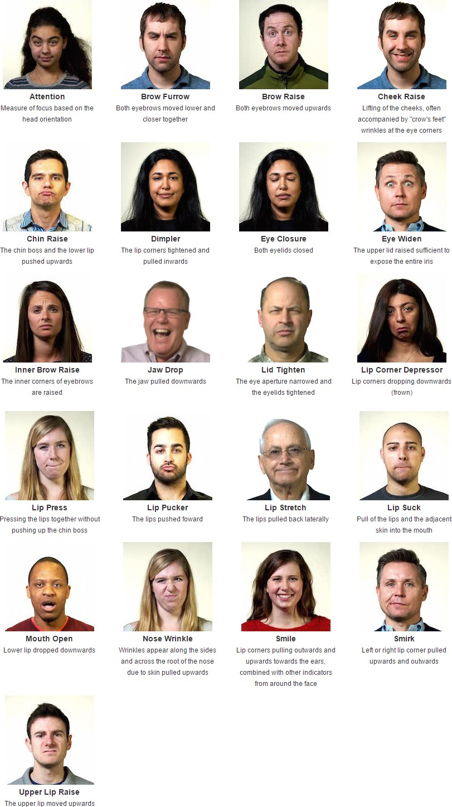
iMotions, "iMotions Facial Expression Analysis Solution" (YouTube)
Say what AFFDEX measures (facial movements and expressions) and what it cannot (what the viewer felt), why the moments of a commercial are worth measuring, and which equipment, software, and files this workshop uses.From idea to research question
A client rarely arrives with a research question. A client arrives with a business question, a statement of what the business wants to know or to happen. Picture a brand manager with a finished 60 second commercial: "Does our commercial make people feel something, and when?" The sentence does not say who will watch, which feeling, how it will be measured, or against what. A research question names the problem the study will answer and signals the type of study needed. A hypothesis is a testable answer to it, written with the specific variables that will be measured. The iMotions design guide asks for both before any data are collected.
The lab asks every study to pass through one sentence with four slots: who, sees what, measured how, compared against what. Here it reads: adult viewers (who) watch one commercial on the lab monitor after a quiet Baseline screen (sees what), while the respondent camera records the face for AFFDEX and a rating afterward asks how much they liked the ad (measured how), and each viewer's face during the commercial is compared with the same viewer's face during the Baseline, and the moments of the commercial with one another (against what). Notice the honest verb: the camera records a face, not a feeling.
Weak questions fail in predictable ways. "Do people like our ad?" asks for an opinion, which is reported, not displayed. "What emotions does the ad cause?" has every emotion as an answer and claims a cause and a feeling at once. "Is the ad emotional?" can be answered yes or no. The repair names an observable, a measure, and a comparison: "Among the same viewers, is Joy, as AFFDEX detects it, present for a larger share of the commercial than of the Baseline, and in which 10 second moments is it concentrated?" In the iMotions table below, the first good question is about a TV ad, but "experiencing positive emotions" is exactly what a camera cannot see; for a face study, read it as "showing positive expressions."
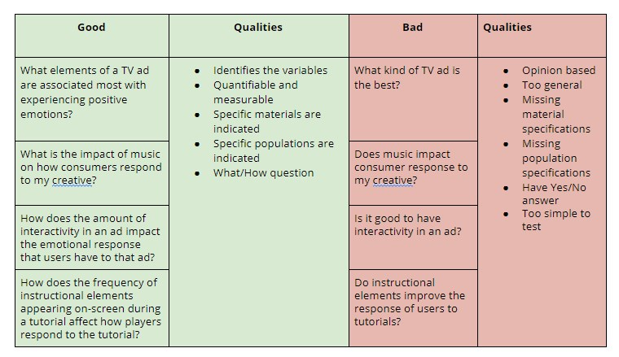
Be exact about what a face study can answer. Presence: was an expression, a configuration of facial movements such as a smile, detected in a frame or an interval? Timing: at which moment of the commercial did it appear? Association: do viewers who show more of an expression also report liking the ad more, or act differently afterward? It cannot answer what the viewer felt. An emotion is a state of the person, a feeling with its thoughts and bodily changes; an expression is something the face did. The iMotions Cognitive Principles Guide says facial expressions "are not necessarily a reflection of a person's internal thoughts or feelings," and the AFFDEX signal descriptions are themselves careful: a smile is "Normally a sign of enjoyment," and a brow furrow "Can indicate concentration, confusion or dislike." A viewer can smile out of politeness and can enjoy a commercial with a still face. Reading a feeling straight off a signal is called reverse inference, and reviews of consumer neuroscience warn against it (Plassmann, Venkatraman, Huettel, & Yoon, 2015).
Two traditions supply the vocabulary. The circumplex model describes affect with two dimensions: valence, how pleasant or unpleasant a state is, and arousal, how calm or activated it is (Russell, 1980). AFFDEX reports valence from the face, but the help center names arousal, the intensity of an emotion, as what facial expression analysis cannot assess: a high smile score is high confidence that a smile is present, a probability that correlates with intensity "but they are not the same." Its circumplex example takes arousal from skin conductance, the subject of Workshop 4.
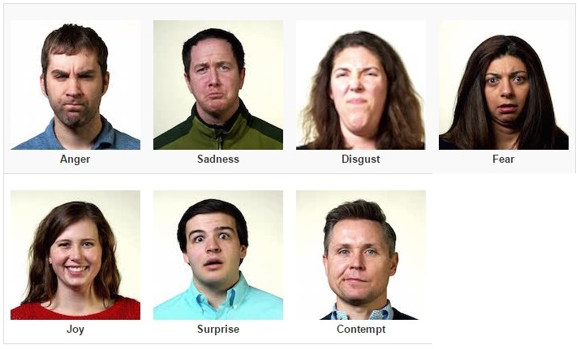
The second tradition is the theory of basic emotions: a small set of emotions, each with its own distinctive and universal facial signal (Ekman, 1992). AFFDEX's seven emotion scores align, the help center states, with Ekman and Friesen's EMFACS-7, an emotion coding scheme built on FACS. A large review found that people do smile when happy more often than chance would predict, but that how they show each emotion varies substantially across cultures, situations, and people, and that one configuration of facial movements can go with more than one emotion (Barrett et al., 2019). You need not settle the debate to run a good study, but you must read "Joy" in a data file as the name of a score that responds to a smile.
The hypotheses need three more terms. FEA thresholding is an iMotions R notebook (a built in analysis routine written in the R language) that turns each 0 to 100 score into present or absent, frame by frame: an expression counts as present when its score passes a threshold, by default 50. Percent of time present is the share of an interval during which the expression was present. A binning annotation cuts the commercial into equal intervals, here six bins of 10 seconds, Bin_01 to Bin_06.
- H1. Joy is present for more of the commercial than of the Baseline: in the same viewers, Percent of time present for Joy is higher during the commercial.
- H2. Joy is not spread evenly across the commercial: Percent of time present for Joy differs across the six 10 s bins, and the plan expects it to concentrate in the last two bins, Bin_05 and Bin_06.
- H3. Viewers who show more Positive Valence during the commercial like the ad more: Percent of time present for Positive Valence (valence above +50) is positively related to a liking rating from 1 to 7 given after the commercial.
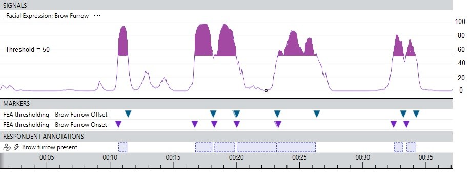
Each hypothesis rests on a reason. Joy and surprise during video ads have been linked to whether viewers keep watching (Teixeira et al., 2012), and faces recorded by webcam have predicted ad liking (McDuff et al., 2015), which grounds H1 and H3. H2 is a timing question: research has asked when an ad should entertain (Teixeira et al., 2014), and the design guide names finding the moments "that connect emotionally" as a goal of video testing. Advertising research has long set self report, physiological, and facial measures of emotion side by side (Poels & Dewitte, 2006), including on television ads (Micu & Plummer, 2010), which is why H3 pairs a facial measure with a rating instead of letting one stand for the other. All three tests are two tailed: H1 and H3 state the direction the reasoning predicts, but a result the other way would also matter to the client.
The iMotions design guide puts it plainly: "Biometric measures are granular enough that you can almost always find some result." AFFDEX gives at least 29 scores for every frame in which it finds a face (seven emotions, 20 action units, valence, and engagement, plus others such as Attention, Sentimentality, Confusion, and head position), each summarized in nine intervals at any threshold. Test only those 29 scores for a commercial against Baseline difference at three thresholds and you have run 87 tests; if no real difference existed anywhere, about one test in twenty, four or so in all, would still come out significant at the .05 level.
The remedy is to choose the expressions, the measure, the moments, and the threshold before the data exist. Here Joy is the primary expression for H1 and H2 and Positive Valence for H3; the primary measure is Percent of time present at the default threshold of 50; the moments are the six bins; and thresholds of 25 and 75 are named in advance as a sensitivity analysis, a rerun that shows how much a result depends on one choice. Surprise, Brow Furrow, and Negative Valence are labeled secondary, to be described and not tested. Filing that plan, dated, before collection is called preregistration, and it lets a reader tell a prediction from a story told afterward.
Help center articles for this section: Designing Your Research Study · Introduction to: Facial Expression Analysis · Affectiva (AFFDEX) Signals Overview
Turn a client's business question into a research question and a one sentence comparison, say what a face study can answer (presence, timing, association) and what it cannot (the felt emotion), write three hypotheses with one primary measure each, and explain why fishing through the 29 or more AFFDEX scores finds chance.Designing a face study around a baseline
A design is the set of decisions that make a comparison fair. For a face study the first is what each viewer's face during the commercial is compared against, and the answer is the same viewer's face at rest. Faces differ at rest: one mouth turns up a little, one brow sits low. Webcams, distance, and light differ between sessions too. A Baseline, a neutral screen shown before the commercial, records each viewer's resting face under that day's conditions. Comparing the commercial with it makes the design within subjects: every viewer supplies both conditions, so stable differences between faces, cameras, and rooms drop out of the comparison.
AFFDEX does part of this on its own. The help center explains that it "has historically not required a baseline neutral stimulus" because of a rolling baseline: each frame is compared with the faces the same person makes in past and future frames, which subtracts a persistent resting face. So the Baseline here is not a calibration of AFFDEX but a comparison period, as in the iMotions demonstration study of video commercials: "it is often useful to add a 'baseline' to the study to compare your results against." If you did Workshop 2, its order was balanced; here the Baseline always comes first, so the commercial minus Baseline difference also contains settling into the chair, a cost to report.
The real study and the simulated data share this structure, and each part has a job.
| Part | Length | Why it is there |
|---|---|---|
| Baseline | 60 s | Each viewer's resting face under that session's camera and light, the period the commercial is compared against |
| Commercial | 60 s | The stimulus, played once, the same for every viewer |
| Recovery | 15 s | A neutral pause that shows whether expressions return toward the Baseline |
| Questionnaire | A few questions | Self report no camera can supply, such as liking of the ad |
In the plan, an instruction slide first gives every viewer the same words: "Watch the screen as you would at home; you do not need to do anything." It must not name the brand or say that the study is about emotion, because a viewer who guesses what the researcher hopes to see tends to supply it, a demand effect. The design guide's video ad example adds: "Please do not obstruct your face during the session and keep your hands relaxed."
An average over 60 seconds can hide a strong response that lasted five, so the plan fixes, before collection, how the commercial will be cut into moments. A stimulus annotation marks an interval of a stimulus once for every respondent; the help center recommends stimulus annotations for video commercials. A binning annotation cuts a stimulus into intervals of equal length; the iMotions commercial demo suggests "a 'binning' annotation with a fixed duration (e.g., of 5 seconds)," or annotations that mark scenes such as the end scene. This plan uses six 10 second bins, Bin_01 (0 to 10 s) to Bin_06 (50 to 60 s). Scene annotations drawn from the storyboard, the shot by shot plan of the commercial, carry more meaning. Either works if it is fixed before anyone is recorded, because bin edges chosen after seeing the smiles let the data draw their own boundaries.
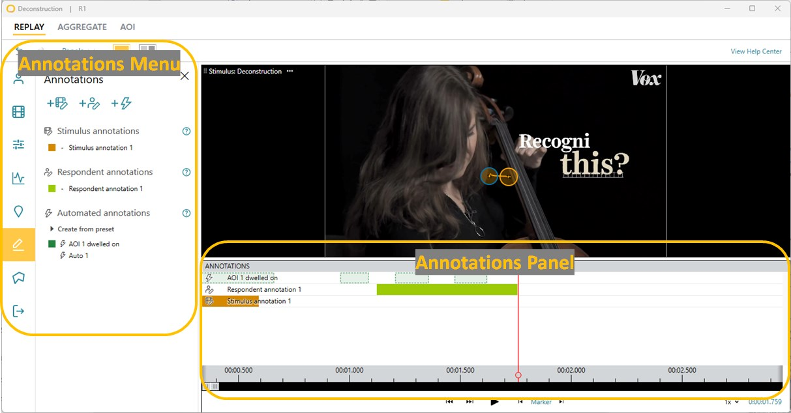
The design guide also warns that "it typically does not make sense to use facial expression analysis when testing static images," and even during a good commercial spontaneous expressions are small and rare: expect many viewers to show no Joy at all during a quiet Baseline, and plan for those zeros (section 03).
Consent is stricter here than in any other workshop. A face video, the respondent camera recording, identifies the viewer outright and is the most sensitive file the lab keeps. iMotions guidance treats face recordings as personal data, and each export of respondent camera recordings writes a separate video file for every stimulus and respondent. Informed consent is a documented explanation, given before participation, of the purpose, that taking part is voluntary and can be withdrawn, the participant's rights, how the data will be handled, and the risks. For face video the handling part must match what the lab actually stores: that the face is recorded on video and scored by software; who may watch the video; where it is stored; when it is deleted; whether any image of the face will appear in a report; and that a viewer who withdraws can have it deleted. Post processing (section 07) works from the video itself, so the video is kept at least until processing is final, and the form must say so. A form that promises anonymity while a face video sits on the laptop is false. Privacy concerns raised for gaze data (Kröger, Lutz, & Müller, 2020) apply even more to faces, and the NMSBA code of ethics sets out participants' rights (Neuromarketing Science & Business Association, n.d.). At Jacksonville State a study that will be published or presented first goes to the Institutional Review Board (IRB), the committee that reviews research with human participants.
The main comparison is paired: each viewer's commercial against the same viewer's Baseline. The paired t test works on each viewer's difference, so the stable part of each viewer cancels. The effect size for paired data is dz, the mean of the differences divided by their standard deviation (Lakens, 2013). Power is the probability of detecting an effect of a given size if it is real; the usual target is 80 percent.
For a large effect, dz = 0.8, a paired test at two tailed alpha .05 and 80 percent power needs 15 usable viewers; a medium effect, dz = 0.5, needs 34; a small one, dz = 0.3, needs 90, the same numbers as in Workshop 2.
G*Power is the program most researchers cite for this (Faul, Erdfelder, Lang, & Buchner, 2007). Cohen's small, medium, and large conventions were written for differences between groups (Cohen, 1992), so they only roughly guide dz. With many zeros in face data, the primary test will be rank based (section 08), so treat this as a benchmark.
Face studies lose viewers in their own ways: glare on glasses lenses hides the eyes and brows, a viewer who looks down leaves the picture ("The face must be fully in view for the algorithm to detect the face"), and uneven light washes the face out. Plan to lose one viewer in five to one in four (20 to 25 percent), and schedule by one rule: the usable viewers needed divided by the share you expect to keep (1 minus the expected loss), rounded up. For dz = 0.5, 34 / 0.80 = 42.5, so 43, and 34 / 0.75 = 45.3, so 46: schedule about 43 to 46, within the design guide's 20 to 60 people per study condition. Adding 20 percent to 34 is not the same: 41 viewers, less one in five, leaves 32.8, short of 34. Then write the exclusion rule. After post processing, iMotions reports for each recording a quality value, here called Data quality, that is "only representative of the percentage of frames successfully analyzed," a measure of face detection and not of accuracy. The manuals state no minimum, so the lab sets its own rule in advance: a viewer whose Data quality is below 80 percent is excluded, and the session log records glasses, lighting, and anything that took the face out of view. A rule chosen after seeing who looks bad is chosen to get a result.
Last, one commercial is one stimulus, a specific thing shown to viewers, not a sample of commercials. Whatever the faces did belongs to everything in it at once: story, music, people on screen, product, brand. The result can say that this commercial, as made, went with more Joy than the Baseline in these viewers. It cannot say that humor or emotional advertising in general produces smiles; that needs many commercials analyzed as a sample, called stimulus sampling (Judd, Westfall, & Kenny, 2012).
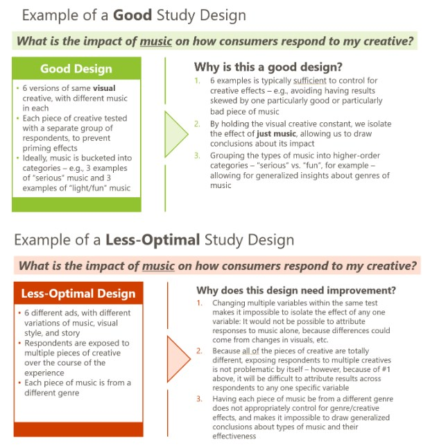
Help center articles for this section: Designing Your Research Study · Demo study: Sony Bravia (Testing of video-commercials) - 9.0 · Using Annotations · Facial Expression Analysis: Importing and Post Processing Videos · Export: Respondent, Environment, and Scene Camera/Screen Recordings
Explain why each viewer is compared with his or her own Baseline, give each part of the session a job, fix the bins and the exclusion rule in advance, write consent that matches the face video you keep, plan the sample with dz and a margin for lost faces, and say what one commercial can show.The worked example in full
Sections 01 and 02 fit on one page, the first deliverable of any study in this lab. Below is the commercial study as a student plan; change the commercial, the bins, and the numbers, and it becomes your own.
- Question
- Is Joy, as AFFDEX detects it, present for more of a 60 s commercial than of a neutral Baseline, in which 10 s moments is it concentrated, and do viewers who show more Positive Valence like the ad more?
- Hypotheses
- H1: Percent of time present for Joy is higher in the commercial than in the Baseline. H2: Joy is not spread evenly across the commercial: Percent of time present for Joy differs across the six 10 s bins, and the plan expects it to concentrate in the last two bins, Bin_05 and Bin_06. H3: Percent of time present for Positive Valence in the commercial is positively related to liking of the ad. All two tailed.
- Design
- Within subjects against a baseline: every viewer sees the same fixed sequence once.
- Stimuli and flow
- Instructions, Baseline (60 s, neutral), Commercial (60 s), Recovery (15 s, neutral), then a questionnaire (liking, brand attitude, sharing).
- Task
- "Watch the screen as you would at home; you do not need to do anything," in the same words for every viewer, with the request not to cover the face.
- Annotations
- One binning annotation: six 10 s bins, Bin_01 (0 to 10 s) to Bin_06 (50 to 60 s), fixed before collection.
- Expressions
- Joy (H1, H2) and Positive Valence (H3). Surprise, Brow Furrow, and Negative Valence as secondary expressions. Engagement as a mean raw score from 0 to 100, not thresholded.
- Threshold
- FEA thresholding at the defaults, Emotion 50 and Valence +50 (Positive Valence) and -50 (Negative Valence); the help center calls 50 percent confidence "a moderately strong display of facial response." Sensitivity analysis at 25 and 75.
- Sample
- 32 viewers scheduled (V01 to V32) for a target of 30 usable, inside the design guide's 20 to 60 per condition. That is fewer than the plan rule of section 02 would schedule (30 / 0.80 = 37.5, so 38, for a loss of one in five); the simulation lost 2 of 32, about 6 percent, but a real study should schedule by the rule.
- Measures
- For each viewer, interval (Baseline, Commercial, Recovery, each bin), and expression: Percent of time present and the Number of segments, how many separate times the expression passed the threshold. Across viewers: how many showed the expression at all. Survey: Ad_liking_1to7. Recording: Data quality (%), the percentage of frames AFFDEX analyzed.
- Exclusion rule
- Exclude a viewer whose Data quality is below 80 percent, the lab's own rule; the manuals state no minimum.
- Analysis plan
- H1: a Wilcoxon signed rank test on the Commercial minus Baseline differences (primary), the paired t test and dz beside it, and an exact McNemar test on the viewers with any Joy, all repeated at 25 and 75. H2: a mixed model with bin as a factor and a random intercept for each viewer (Bates, Mächler, Bolker, & Walker, 2015), its ICC, two planned contrasts of Bin_05 and Bin_06 against the mean of Bin_01 to Bin_04 with Holm adjustment (set before the data as a check on whether Joy concentrated late in the commercial, in the last two bins, as the plan expects), the Friedman test as a check, and the percent of viewers with Joy per bin. H3: Pearson and Spearman correlations of Positive Valence time with Ad_liking_1to7. Alpha .05.
- Deliverables
- A table by interval and bin, three figures, a results section and a discussion in journal form, and a three sentence client summary that says expressions are not feelings.
Section 08 runs these tests; here are the reasons. Face data are zero inflated: many values are exactly 0, because many viewers never pass the threshold in an interval, so a few expressive viewers pull the mean up. The Wilcoxon test therefore works on the ranks of the paired differences, and the median, the middle value, sits beside the mean. McNemar compares how many of the same viewers showed any Joy in each period. A mixed model is a regression that knows which rows belong to the same viewer; its random intercept gives each viewer an overall level, and the ICC (intraclass correlation) is the share of variation between viewers. The two contrasts compare each late bin with the mean of the first four because the plan expects Joy in the last two bins; Holm adjustment guards the two contrasts against false positives, Friedman checks the bins on ranks, and Pearson and Spearman correlate values and ranks.
Each hypothesis has one primary measure. H1 uses Joy Percent of time present, a share rather than seconds, so the Baseline, the commercial, and the bins sit on one scale; the count of viewers with any Joy checks that a higher mean does not come from two or three very expressive faces. H2 reads the same measure in each bin beside the percent of viewers with Joy, the quantity the optional FEA thresholding Aggregation step displays over time. H3 uses Positive Valence Percent of time present during the commercial and the liking rating, which no camera can supply.
Everything else is described, not tested. Surprise, Brow Furrow, and Negative Valence are reported by interval and bin to show what else the faces did. Engagement differs in kind, for three reasons. It is not thresholded, so it is a mean raw score per interval rather than a percent of time. It measures responsiveness "whether positive or negative," so a rise does not say which way the face moved. And no hypothesis names it: testing it after looking would add an unplanned test, the fishing of section 01.
The real material is "Nike Campaign Ad Evaluation," the lab's own study in the Library on the lab computer. The lab's operating guide records its structure: a 60 s Baseline, a 60 s Nike commercial, a 15 s Recovery, and a short questionnaire, with the laptop's front camera as the respondent camera for AFFDEX and a Shimmer3 GSR+ unit for skin conductance. What the guide does not record (what the commercial shows, how many respondents were recorded, which settings were used, what the questionnaire asks) you find by opening the study on the lab computer, not by guessing.
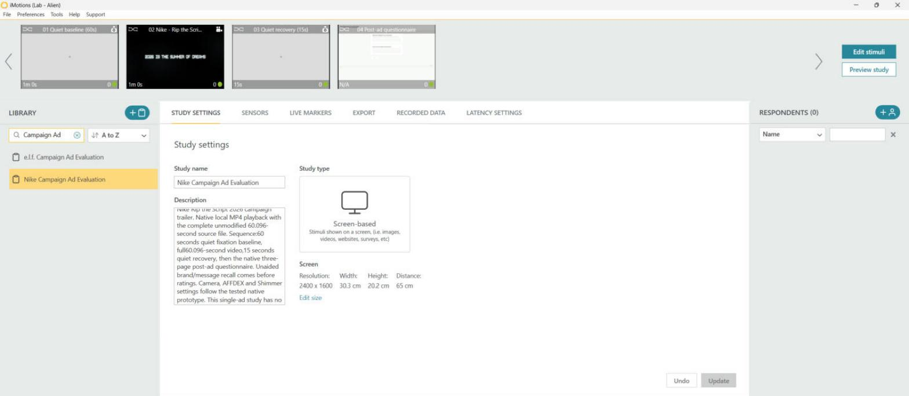
This workshop reports no results from the Nike study. Every number about viewers, in any section, comes from a SIMULATED data set built to mirror a study of this kind. No viewer was recorded for it, and none of its numbers may be quoted as a finding about the Nike commercial or about real viewers.
The simulated files sit in the site's data folder; make_simulated_data.py (seed 20265798) generated them, and each data file opens with a line that says SIMULATED. SIMULATED_fea_metrics.csv feeds the statistics: one row per respondent, interval, and expression, so 32 viewers, 9 intervals, and 6 expressions give 1,728 rows. Its columns are Study Name, Respondent Name (V01 to V32), Interval type (Stimulus, or Annotation for the bins), Interval label, Interval duration (s), Expression, Threshold, Percent of time present, Number of segments, Mean raw score (0-100), filled only for Engagement, and Data quality (%). The layout is modeled on the help center's description of the FEA Metrics Export, "how often and how long a facial expression was present for each respondent and each time interval," but the manuals print no real header row, so verify it on the lab machine. The files ending in threshold25 and threshold75 share the layout.
SIMULATED_fea_survey.csv holds Respondent Name, Gender, Age, Ad_liking_1to7, Brand_attitude_1to7, and Would_share_Yes_No. SIMULATED_fea_session_log.csv is the operator's log: Respondent Name, Session Date (the dates, October 26 to 29, 2026, are simulated like every other value in the file), Operator, Glasses, Lighting note, Face detection percent (the operator's copy of Data quality), Data complete, and Decision note. Respondent Name joins the three files. Two log rows end in EXCLUDE: V07, Data quality 61 percent, with overhead light reflecting on the glasses lenses, and V19, 72 percent, who looked down at a phone during the commercial. Both fall below the 80 percent rule, which leaves 30 viewers (all simulated). The folder also holds analysis.R, an Excel workbook, and results_text.md, the model paragraphs that later sections adapt.
One deliverable is a picture over time: an Aggregate Replay graph, the replay view that summarizes all respondents, of how many respondents showed an expression in each time window (verify on the lab machine that it appears for a video stimulus in 11.1). Any such graph must state the expression, the threshold, the window length, and the number of viewers.
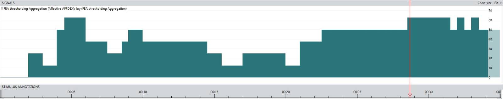
Help center articles for this section: R Notebook (FEA): Facial expression analysis thresholding and aggregation · Affectiva (AFFDEX) Signals Overview
Write the one page study plan, pair each hypothesis with its primary measure, explain why Engagement is described and not tested, say what is known about the Nike study without guessing, and say which simulated file answers which question.Building the study: the respondent camera, AFFDEX, and the flow
AFFDEX can score only what the respondent camera recorded, and only if the camera and AFFDEX were on before the viewer sat down. So the build has three layers, all settled before the first session: the computer (which camera records the face, and whether AFFDEX runs), the study (its sensors and screens), and the plan. If you did Workshop 2, the Study Builder is the same; only the sensor changes. Either lab computer works, because AFFDEX is licensed on both keys.
4.1 Set up the respondent camera
Camera settings live in Global Settings, the dialog for settings that apply to the whole computer rather than to one study.
- Open Global Settings. Press Alt+G or choose Preferences > Global Settings; the Preferences menu sits in the menu bar at the upper left, beside File. You should see a dialog with nine tabs: Eye tracking, Calibration, Slide Show, Stimuli, Results, Audio & Video, Sensors, API, and Packages. Common mistake. Choosing Sensor Settings (Alt+S), just below it, which opens the same dialog on the Sensors tab; click Audio & Video instead.
- Choose the camera. On the Audio & Video tab, under Camera Setup, select Respondent under Select Camera To Configure, tick 'Enable VideoCam Capture', and choose the input in the list beside it. On the lab computer in October 2026 the input read Integrated Webcam, the laptop's built-in camera; if you plug in an external webcam, choose it instead and write down its model. You should see your face in the camera preview. If Windows reports "Access to the camera was denied," set "Allow desktop apps to access your camera" to On in the Windows camera privacy settings. Common mistake. Configuring the Scene or Environment camera: facial expression analysis is "only available for recordings from the Respondent Camera."
- Set the resolution and frame rate. The resolution, the size of each frame in pixels, sets how many pixels the face gets; the frame rate, the frames recorded per second, sets how many frames AFFDEX can score. "Most cameras allow at least 640x480 video resolution at 20-30 frames per second," and higher settings add processing and memory load. The Facebox, the box AFFDEX draws around a detected face, "should be at least 100px" wide. On the lab computer one list sets both: it read 1280x720@30, which means 1280 by 720 pixels at 30 frames per second, with an Options button beside it. Include Audio was ticked on the lab computer, with the laptop microphone chosen; untick it unless the plan needs sound, because a voice makes a face video easier still to identify. Below the preview, an Encoding Quality slider and a codec list (H264) set how the video file is compressed; leave both as you find them. You should see your choice in the resolution list. Common mistake. Not writing the camera model, resolution, and frame rate in the study notes; the methods paragraph (section 06) needs all three.
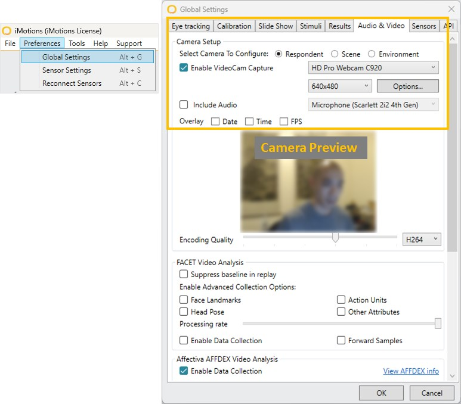
![Global Settings dialog on the lab computer, Audio and Video tab: Camera Setup with Respondent selected, Enable VideoCam Capture ticked, Integrated Webcam, 1280x720@30 with an Options button, Include Audio ticked with a microphone array, Date, Time, and FPS overlay boxes, Flip Image boxes, the camera preview replaced by a gray box, Encoding Quality with H264; below it the Affectiva AFFDEX Video Analysis section with Enable Data Collection, Save Respondent Video, and Forward Samples ticked, Enable Multiface Detection, Face ID, and Recognize Faces greyed out, AFFDEX baseline set to Baseline on, and a Processing rate slider](../assets/ws3/figures/live/live_camera_settings.png)
4.2 Turn on AFFDEX
- Enable data collection. On the same tab, below the camera, find the section titled Affectiva AFFDEX Video Analysis, tick Enable Data Collection, and click OK. You should see the box ticked; the Facebox and the AFFDEX signals then appear in the Sensor Preview (section 05). Common mistake. Pressing Enter while the dialog is open: Enter clicks OK and closes Global Settings, so finish every change before you press it. The manual's screenshot also shows a FACET section, a different engine; it does not appear on the lab computer because the lab does not license FACET.
- Leave the rest as you find it. On the lab computer the section also holds Save Respondent Video and Forward Samples (both ticked), three greyed-out boxes (Enable Multiface Detection, Face ID, and Recognize Faces), an AFFDEX baseline choice (Baseline on, selected, or Baseline off), a Processing rate slider, and a View AFFDEX info link. The manuals do not explain these settings. Keep Save Respondent Video ticked, because replay and post-processing (section 07) both work from the saved face video. The 11.1.11 release notes added the option to "collect facial expression data without storing respondent videos," and this box appears to be that switch; unticking it may suit a consent form that promises no video, but nothing would then remain to replay or post-process, so the supervisor decides before the first session. The baseline choice is probably the rolling baseline of section 02; never change it in the middle of a study, and write its setting in the study notes.
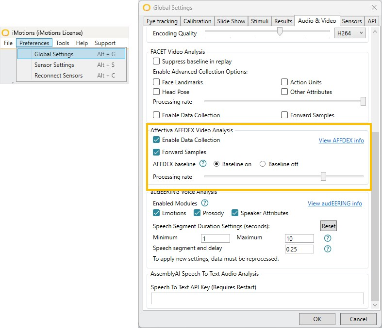
4.3 Create the study and its flow
- Create a Screen-based study. Click the "+" next to LIBRARY and choose Screen-based, the type for stimuli shown on the lab monitor. You should see "Create a new study" with seven tiles. Common mistake. Choosing Screen-free recording, whose "Face recording" type records the camera "without concurrent stimulus presentation."
- Select the sensor: Respondent camera with AFFDEX ticked. "If a sensor is currently enabled in Global Settings, iMotions will auto-select this sensor," which is why 4.1 and 4.2 come first. Add Shimmer only if the plan measures skin conductance, as the Nike study does (Workshop 4). You should see the tile selected and AFFDEX ticked. Common mistake. Leaving AFFDEX unticked because the tile looks selected.
- Name the study by the lab convention YYYY_Client_Topic (for example 2026_ClassPractice_FaceAd) and create it.
- Build the flow, the ordered list of stimuli every viewer sees, in the Study Builder (Edit stimuli, as in Workshop 2): an Instructions survey slide (a screen that shows text or asks a question) with "Watch the screen as you would at home; you do not need to do anything" and "Please do not obstruct your face during the session and keep your hands relaxed"; the Baseline (60 s); the commercial (60 s, added as Media); the Recovery (15 s); and questionnaire slides with the Question IDs Ad_liking_1to7, Brand_attitude_1to7, and Would_share_Yes_No. Pin every stimulus (the pin fixes its place; the arrow randomizes it) and give the timed stimuli their durations with automatic advance. You should see Record web cam set to Yes on the Stimuli overview for every stimulus whose face you need. You can also click a stimulus in the bar at the top of the main window: its VIDEO DETAILS (or image details) list Options with Track mouse, Record keyboard events, and Record web cam (figure below). The manuals do not state the default, so check every stimulus. Common mistake. A Baseline without the webcam, which leaves H1 nothing to compare.
- Preview every video. If one lags, flickers, or has poor sound, right-click the study and choose 'Convert videos for compatibility', which replaces the original and "will not convert video files to different formats."
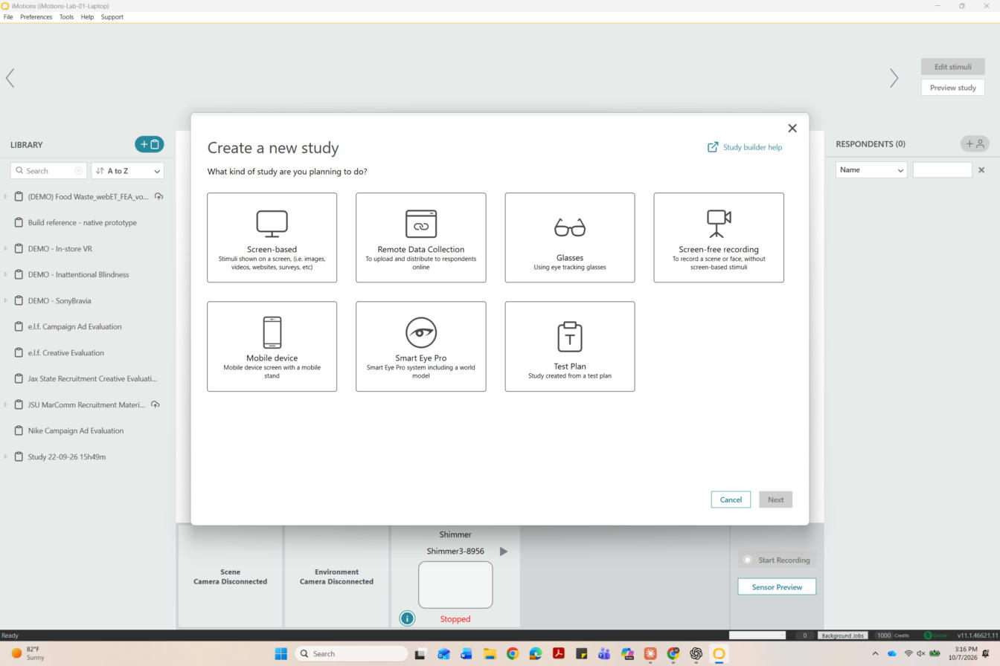
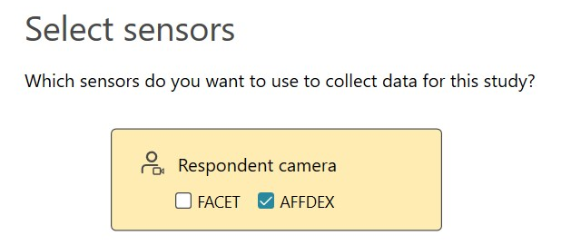
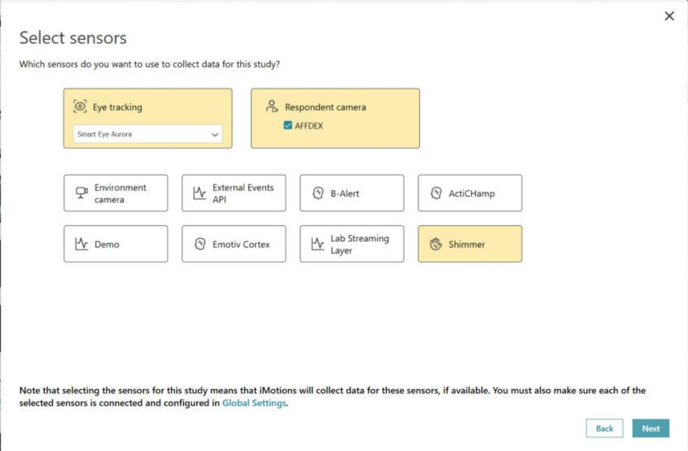
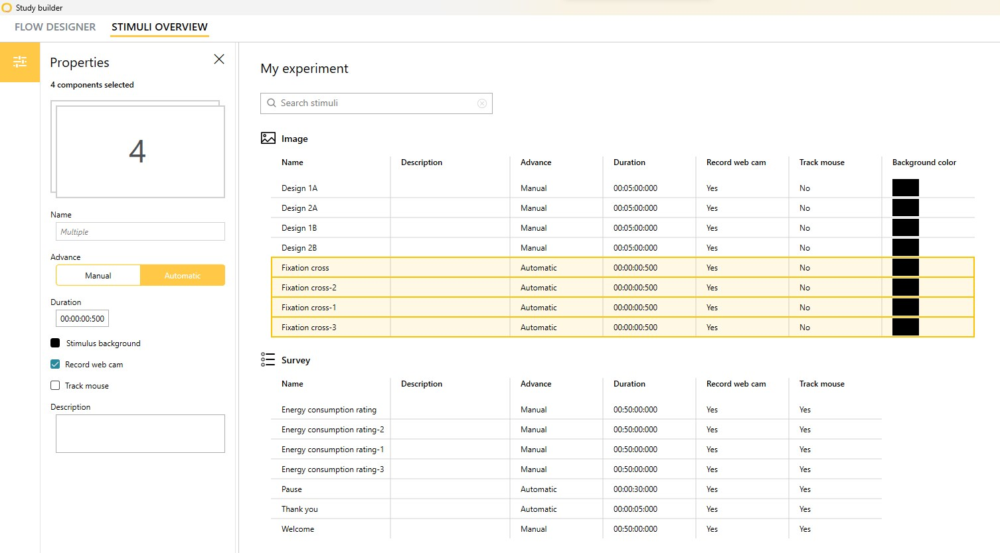
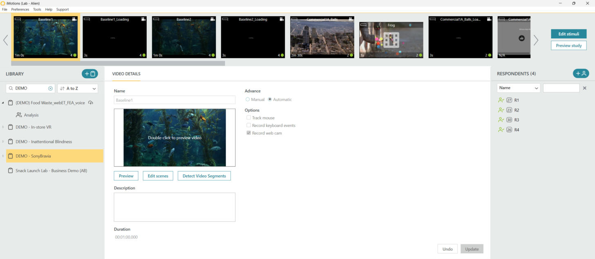
4.4 The study tabs, and what to settle before the first viewer
Click the study name to see its tabs: STUDY SETTINGS, SENSORS, GAZE ANALYSIS, LIVE MARKERS, EXPORT, RECORDED DATA, and LATENCY SETTINGS (a study without eye tracking, such as Nike Campaign Ad Evaluation, has no GAZE ANALYSIS tab). SENSORS lists every sensor with a checkbox. In Nike Campaign Ad Evaluation it shows Respondent Camera with AFFDEX ticked and Shimmer ticked, and Eye tracking unticked (figure below). A remote study (Remote Data Collection) differs: its SENSORS tab, like its Select sensors page, offers only "Eye tracking" (Web Camera) and "Respondent Camera," with no AFFDEX box, because remote face videos are scored afterward by post processing in iMotions Lab (section 07). LIVE MARKERS and RECORDED DATA return in section 05, EXPORT in section 07; leave LATENCY SETTINGS unchanged. Facial expression has no tab: its signals appear in the Sensor Preview (section 05) and, after post processing, in the replay (section 07).
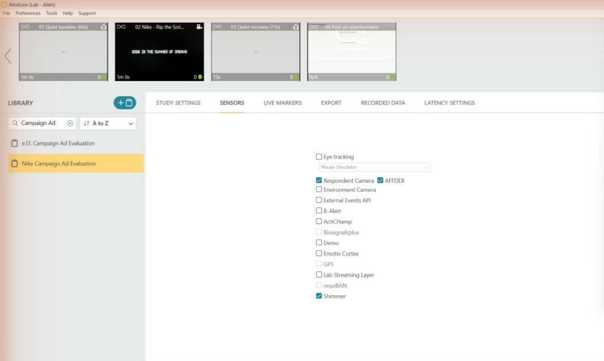

One of the lab's remote studies on my.imotions.com shows why. Its Sensors page has four switches: Webcam ("Record respondents' faces via their webcam"), Eye Tracking, Head Pose, and Facial Expressions. Facial Expressions was off when collection began, and the switches lock once collection starts; the help center says sensors cannot be changed after upload. The lab works the same way: a viewer cannot see the commercial for the first time twice.
Before the first respondent, check five things: the camera and AFFDEX are on and the camera settings written down; the study's sensors include the respondent camera with AFFDEX; the flow is pinned, previewed, and records the webcam where needed; the bins and the 80 percent exclusion rule are in the plan (section 02); and the consent form names the face video, its storage, and its deletion. Then record yourself once, check the preview and the replay, and back up the empty study with File > Save Study To File.
Help center articles for this section: Camera Setup (Audio & Video Settings), Enabling Affectiva AFFDEX in iMotions, iMotions Global Settings, Using the iMotions Study Builder, Re-Encoding of Incompatible Video Stimuli, Windows Settings Recommendations, Designing Your Research Study.
Camera, light, and the session
AFFDEX scores only a face it can find: "The face must be fully in view for the algorithm to detect the face." Most of what decides that is fixed before anyone clicks Start Recording: where the camera sits, how the light falls, and what the viewer does with hands, hair, glasses, and phone. There is no calibration, as there was for the Aurora if you did Workshop 2; the check is the live preview.
5.1 The camera and the viewer
The camera "should be set at eye level and directed to the front of the respondent's face," placed so that the face stays in the picture when the viewer shifts a little. On the lab monitor that means a webcam on the bezel of a monitor that tilts toward the viewer; on the laptop, raise the laptop until its front camera is at eye level instead of looking up at the chin. AFFDEX 5.1 and newer reads heads turned "ideally between 5-10 degrees up/down and 40 degrees left/right," so the camera belongs on the screen that plays the commercial. Use a fixed chair without wheels. Phones go away before the session, and hair, hands, hats, and sunglasses stay clear of the face; talking, gum, and eating spoil the scores. Ordinary glasses are allowed, but check them for glare.
5.2 The light
"Best results are obtained with uniform, diffused illumination of the face against a dark, contrasting background." Light that falls straight on the face or the monitor obscures expressions, and a bright window or lamp behind the viewer washes the face out; the manual adds that detection is lost when the face's average brightness falls below 30 on a scale from 0 (black) to 255 (white), though which failure that rule describes is an item to verify on the lab machine (section 06). The iMotions lab recommendations suggest dispersed light from a lamp pointed against the wall behind the respondent, and blackout curtains if the room gets sunlight. The simulated session log records the fixes the lab uses: overhead lights dimmed, blinds lowered, a lamp against the wall, and the monitor tilted slightly down. In the simulated data, V07's glasses reflected the overhead light, the glare hid the eyes and brows for long stretches, and Data quality fell to 61 percent.
5.3 The preview
The Sensor Preview is the window that shows the live sensor data. Check it on your own face before the viewer arrives, and on the viewer's face once seated.
- Open it. Click Sensor Preview beside Start Recording (F12 on a two screen setup). You should see the Respondent Camera panel with two numbers over the video: at the top left the AFFDEX processing rate over the camera's capture rate ("Typical processing for a standard 30 Hz camera, is 10-20 AFFDEX frames per second"), and at the top right the Facebox width. Common mistake. Judging the picture by eye; a face that looks fine to you may be too dark or too small for AFFDEX.
- Read the face. Good: the Facebox and the AFFDEX landmarks sit on the face, the width is at least 100 px, and the face does not fill the frame. Bad: "No Face Detected!" with a processing rate of 0 and a width of 0px, which means the position or the focus is wrong (section 06 shows a detected face beside a missing one). Fix the camera, the light, or the seat before you record.
- Watch the signals. Open the Signals menu, where 'Affectiva AFFDEX' is listed with four groups on the lab computer (Behavioral, EMFACS Expressions, Facial Action Units, and Other Measures; 5.4 explains every signal), and click a signal's name to show its chart in the Signals panel. "Check that the graphs are streaming live and that the data fluctuates as expected": on your own face, smile and frown to see Joy and Brow Furrow move. With a viewer, check only the Facebox and the numbers; asking a viewer to smile rehearses the very response the study measures, a demand effect.
The help center says the Sensor Data Preview during a recording is "only available when running the experiment on a dual-screen setup," so whether the operator can watch the face while the commercial plays depends on the lab layout; verify on the lab machine.
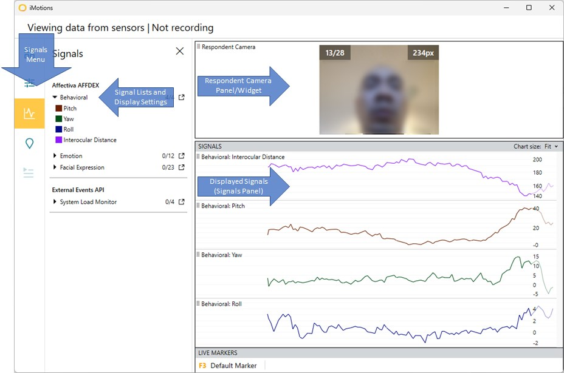
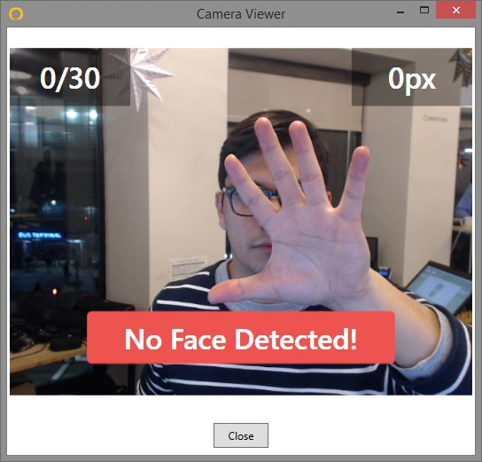
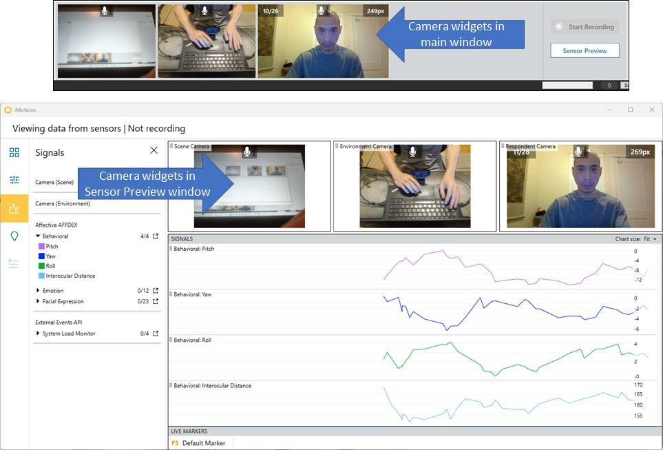
![The Sensor Preview window on the lab computer, titled Viewing data from sensors, Not recording: a Signals menu listing EyeTracker (Smart Eye Aurora), Affectiva AFFDEX with Behavioral (Pitch and Yaw selected, 2 of 4), EMFACS Expressions, Facial Action Units, and Other Measures, External Events API, and Shimmer; panels for the Respondent Camera, with the lab director seated facing the webcam, a thin Facebox drawn around his face, and the Facebox width in pixels at the top right, the iMotions events API, the Shimmer reading Collecting, and the Eyetracker Status reading Not Connected; and the Signals area with the AFFDEX Behavioral Yaw and Pitch lines streaming](../assets/ws3/figures/live/live_webcam_sensor_preview.png)
5.4 Reading every AFFDEX signal
On the lab computer the Signals menu sorts the Affectiva AFFDEX channels into four lists: Behavioral (4 signals), EMFACS Expressions (7), Facial Action Units (20), and Other Measures (13). The count beside a list, such as 0/7, says how many of its signals are shown in the Signals panel. Click a name to show or hide its chart. Each list answers a different question and is read on its own scale, so learn the scale before you judge a line.
![The Signals menu of the Sensor Preview on the lab computer, scrolled to show EyeTracker Behavioral with Pitch, Yaw, and Roll; Affectiva AFFDEX Behavioral (0 of 4) with Pitch, Yaw, Roll, and Interocular Distance; EMFACS Expressions (0 of 7) with Anger, Contempt, Disgust, Fear, Joy, Sadness, and Surprise; Facial Action Units (0 of 20), collapsed; and Other Measures (0 of 13) with Engagement, Adaptive Engagement, Valence, Adaptive Valence, Sentimentality, Confusion, Neutral, Attention, Blink, BlinkRate, Speaking, Yawn, and Pain](../assets/ws3/figures/live/live_signals_menu_affdex.png)
Four rules apply to every AFFDEX signal.
- A value exists only when a face is found. "Data is provided for each frame of video where a face is detected." A gap, or a straight line bridging a stretch of the chart, means no face was found then. It is missing data, not a score of 0.
- The live view is a check, not the result. "AFFDEX renders at 15 Hz during live collection and must be post-processed up to 30 Hz," so the numbers you analyze come from post processing (section 07), not from this window.
- Expression scores run from 0 to 100 and are probabilities, not strengths. 0 means not expressed and 100 means expressed; "50=50% probability it was expressed." The help center warns that a high probability and the intensity of the expression "are not the same." Valence is the exception: it runs from -100 (negative) through 0 to 100 (positive). The head angles are in degrees and Interocular Distance is in pixels.
- Read the axis first. The Signals menu lets you change "the color, filling, and range of the graphs," and a chart set to Fit stretches a tiny wobble to fill the panel. Check the numbers on the right edge before calling a line high or low.
Behavioral: where the head is. These four come from face detection and the landmark positions, not from any expression. Use them to judge the seat and the camera.
| Signal | What it shows | Scale | How to read it |
|---|---|---|---|
| Pitch | The head tilted up or down | Degrees | The thresholding notebook labels Pitch above 0 as Up and below -20 as Down. AFFDEX works best when the head stays within "5-10 degrees up/down." |
| Yaw | The head turned to the right or left | Degrees | Above +10 is Right and below -10 is Left in the notebook. AFFDEX 5.1 and newer tolerate about 40 degrees left or right; beyond that the face is often lost. |
| Roll | The head tilted toward a shoulder | Degrees | Below -10 is a right tilt and above +10 a left tilt. "Head tilt rotations are generally accommodated," so Roll matters least. |
| Interocular Distance | The distance between the two outer eye corners in the video, so how close the face is to the camera | Pixels | Larger means closer. The notebook treats more than 100 px as Forward; AFFDEX 5.1 can track faces down to "at least 40px." A sudden drop means the viewer leaned back. |
The manuals do not say whose right (the viewer's or the camera's) a positive Yaw is. Check it on your own face: turn your head to your right and watch which way the line moves. In the lab capture above, both lines move steadily, then run straight across a span, which is most likely a stretch with no face found.
EMFACS Expressions: the seven emotions. Each emotion is "calculated from Facial Expression scores that correspond with each emotion," following Ekman and Friesen's EMFACS. The manuals define each emotion by the action units that raise or lower it, not in words, so read an emotion through its movements.
| Signal | Rises with | Falls with |
|---|---|---|
| Anger | Brow Furrow, Eye Widen, Lid Tighten, Upper Lip Raise, Chin Raise, Lip Press, Mouth Open | Inner Brow Raise, Brow Raise, Nose Wrinkle, Smile |
| Contempt | Brow Furrow, Smirk | Brow Raise, Smile |
| Disgust | Nose Wrinkle, Upper Lip Raise, Chin Raise, Mouth Open | Inner Brow Raise, Smile |
| Fear | Inner Brow Raise, Brow Raise, Brow Furrow, Eye Widen, Lip Stretch, Mouth Open | Nose Wrinkle, Smile |
| Joy | Cheek Raise, Smile | None listed |
| Sadness | Inner Brow Raise, Brow Furrow, Cheek Raise, Lip Corner Depressor, Chin Raise | Brow Raise, Nose Wrinkle, Smile |
| Surprise | Inner Brow Raise, Brow Raise, Eye Widen, Jaw Drop | None listed |
The manual's table says Outer Brow Raise and Lip Stretcher; the lab computer calls the same movements Brow Raise and Lip Stretch. Read the rows this way: Joy cannot rise without a smile, so a Joy line that climbs while the face is still points to a problem with the light or the Facebox, not a happy viewer. Several emotions share Brow Furrow, so one furrow can lift Anger, Contempt, Fear, and Sadness at once; that is why the plan names one primary expression before the data exist (section 01).
Facial Action Units: the 20 movements. Each is a movement of the face "as defined by the Facial Action Coding System," scored 0 to 100 in every frame with a face. These are the definitions printed in the AFFDEX articles; section 00 shows each one as a photograph.
| Signal | The movement |
|---|---|
| Brow Furrow | Both eyebrows moved lower and closer together. The manual: it "can indicate concentration, confusion or dislike." |
| Brow Raise | Both eyebrows moved upward. It "spontaneously occurs during surprise." |
| Cheek Raise | The cheeks lifted, often with crow's feet wrinkles at the eye corners |
| Chin Raise | The chin boss and the lower lip pushed upward |
| Dimpler | The lip corners tightened and pulled inward |
| Eye Closure | Both eyelids closed. It feeds Blink. |
| Eye Widen | The upper lid raised enough to show the entire iris |
| Inner Brow Raise | The inner corners of the eyebrows raised |
| Jaw Drop | The jaw pulled downward |
| Lip Corner Depressor | The lip corners dropped downward, a frown. "Often associated with sadness." |
| Lip Press | The lips pressed together without pushing up the chin boss |
| Lip Pucker | The lips pushed forward |
| Lip Stretch | The lips pulled back sideways |
| Lip Suck | The lips and the skin next to them pulled into the mouth |
| Lid Tighten | The eye opening narrowed and the eyelids tightened |
| Mouth Open | The lower lip dropped downward |
| Nose Wrinkle | Wrinkles along the sides and across the root of the nose as the skin is pulled upward |
| Smile | The lip corners pulled outward and upward toward the ears, combined with other signs around the face. "Normally a sign of enjoyment." |
| Smirk | One lip corner, left or right, pulled upward and outward |
| Upper Lip Raise | The upper lip moved upward |
An action unit is a movement, not a feeling. Talking, chewing, and a hand near the mouth move the same muscles, which is why the session rules in 5.5 keep the face clear and the viewer quiet.
Other Measures: summaries and housekeeping. This list mixes summary scores built from the action units with signals that describe the face's state. Some are explained in the manuals and some are not; the table says which.
| Signal | What it shows | Scale |
|---|---|---|
| Engagement | How expressive the face is, positive or negative: "a measure of facial muscle activation," built as a weighted sum of action units (11 in the AFFDEX 5.2 article). It is not visual attention and not arousal. | 0 to 100 |
| Adaptive Engagement | Engagement adjusted for "speech-related facial movements"; standard Engagement applies when no speech is detected | Not stated in the manuals |
| Valence | Whether the expression is positive or negative overall. Smile and Cheek Raise push it up; Inner Brow Raise, Brow Furrow, Nose Wrinkle, Lip Corner Depressor, Chin Raise, and Lip Press push it down. | -100 to 100 |
| Adaptive Valence | Valence adjusted for speech-related movements, as for Adaptive Engagement | Not stated in the manuals |
| Sentimentality | "Happy sadness," a bittersweet face "often seen when watching emotionally resonant material" | 0 to 100 |
| Confusion | A brow and face pattern that suggests "mental workload" with "a lack of comprehension"; not part of EMFACS | 0 to 100 |
| Neutral | Listed in the software; no manual defines it | Not stated in the manuals |
| Attention | Focus judged from the head position: "Measure of focus based on the head orientation." It says nothing about where the eyes look; use an eye tracker for that (Workshop 2). | 0 to 100 |
| Blink | A blink, detected "when the eye closure score gets above and then below a certain threshold" | Not stated in the manuals |
| BlinkRate | "The number of blinks happening per minute" | Blinks per minute |
| Speaking | Face movements that go with talking, read from the face, not the microphone (the manual calls it Speech) | 0 to 100 on the manual's chart |
| Yawn | Yawning; named only in the iMotions 11.1.12 release notes | Not stated in the manuals |
| Pain | Expressed pain, meaning a face that looks pained, not pain the viewer reports; named only in the same release note | Not stated in the manuals |
Thresholds turn a line into yes or no. For counting, the notebook in section 07 treats a frame as "expressed" when the score passes a threshold, 50 by default for emotions and action units and +50 and -50 for Valence. The help center reads 50 as "a moderately strong display of facial response" and 25 or lower as "only 1 in 4 manual coders" seeing the expression.
Other lists in the same menu. EyeTracker (Smart Eye Aurora) holds Pupil, Distance, Pitch, Yaw, and Roll from the screen eye tracker (Workshop 2). Shimmer holds skin conductance and pulse (Workshop 4). External Events API holds the System Load Monitor: CPU System %, Memory System %, CPU iMotions %, and Memory iMotions Mb, sampled "once a second." "Too high data loads (typically above 80%) can impact your data collection and synchronization of sensors," so glance at CPU System % before a long session.
What the manuals leave open. The units of Adaptive Engagement, Adaptive Valence, Neutral, Blink, Yawn, and Pain are not in the manuals. The Sensor Data export can show them: on its Sensors page, turn on 'show signal descriptions', and on the File info page tick 'Channel metadata', which adds "a short description of the data, the unit, etc." for every column. Do this on a pilot recording, never on a lab study.
5.5 The session, step by step
- Before the viewer arrives: the camera and AFFDEX checked on your own face, the study selected, the log open, and any live markers defined. A live marker is a time stamp the operator adds with a key during recording, and "You have to define your Live Markers before starting the data recording": on the study's LIVE MARKERS tab, type a Name, choose a key combination and a color, and click Add Marker. Useful operator markers name the problems of a face study, such as "Face covered" or "Talking."
- Consent. Obtain informed consent with the form from section 02, which names the face video, who may watch it, where it is stored, and when it is deleted (Neuromarketing Science & Business Association, n.d.).
- Seat and check. Seat the viewer, adjust the camera and the light, and confirm the Facebox in the preview.
- Record. Select or add the respondent with the anonymous ID from the log (V01, V02, and so on) and click Start Recording. iMotions warns at the start if the study and Global Settings disagree; stop and fix the setting instead of clicking past it. Common mistake. Recording a respondent a second time, which overwrites the data.
- Let it run. The Instructions, Baseline, commercial, Recovery, and questionnaire run on their own. Sit out of the viewer's sight and stay silent. If something happens, press a live marker key where the preview allows it and note the time. End Recording (Shift-F1) is only for stopping early; an aborted recording is still saved.
- Debrief the viewer and answer questions.
- Log. Write the row in the session log, the operator's record of each session, before the next viewer sits down. The simulated log has Respondent Name, Session Date, Operator, Glasses, Lighting note, Face detection percent (filled in after post processing), Data complete, and Decision note. Common mistake. Excluding a viewer on the spot. V19 looked down at a phone during the commercial; the log says so, the recording ran in full, and the 80 percent rule decided after post processing (72 percent, excluded).
5.6 After the session: a red box is expected
After the last stimulus iMotions opens the Recorded Data screen, where each recording shows a quality box per sensor, and "A red outline indicates that the recorded data is below the expected quality for a given sensor." For AFFDEX that is normal: "if using the AFFDEX engine, ALL sessions will show sub-standard data quality at first," because AFFDEX "renders at 15 Hz during live collection and must be post-processed up to 30 Hz after recording." Before post processing, a value of 40 to 50 percent "is not cause for concern." Watch the recording for real problems instead (turning away, a missing face), "especially if the data quality is less than 40%": select the study, the respondent, the 'Recorded data' page, and 'Play'. Privacy concerns raised for gaze data (Kröger et al., 2020) apply even more to a face video, so only the people the consent form names may watch it.
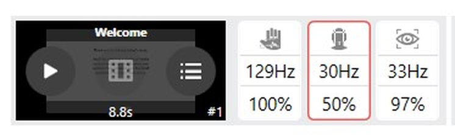
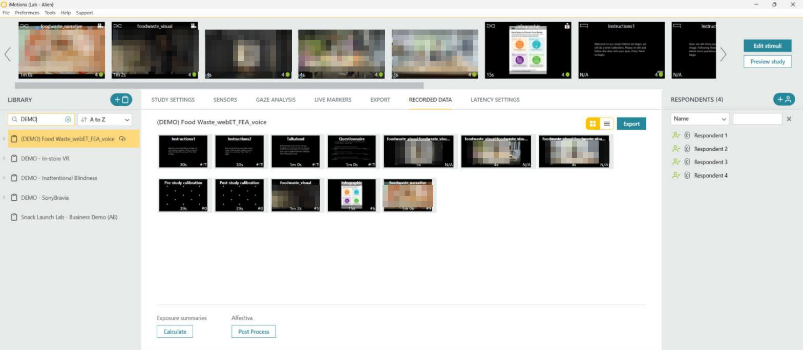
Help center articles for this section: Enabling Affectiva AFFDEX in iMotions, Camera Setup (Audio & Video Settings), Collecting Data, Sensor Preview Window, Creating Live Markers (During Data Collection), Facial Expression Analysis: Why does AFFDEX show low QA in subject replay?, Respondent Replay.
From faces to scores: what AFFDEX measures, what a threshold does, and how to describe it
Every number in a face study ends a chain: the respondent camera records the face, Affectiva AFFDEX finds it in each video frame and scores its movements, the FEA thresholding notebook turns each score into present or absent, and the export counts how much of each interval an expression filled. Workshop 2 measured where the eyes went; this workshop measures what the face did. A methods section names every link, its settings, and the exclusion rule (Appelbaum et al., 2018).
From muscles to action units to emotion scores
The Facial Action Coding System (FACS) describes any facial movement as action units, numbered muscle movements such as the lip corners pulled up or the brows drawn together (Ekman & Friesen, 1978). AFFDEX automates the coding with computer vision, software that analyzes images (McDuff et al., 2016), in three steps: face detection, action unit detection, and expression and emotion classification. "The face must be fully in view," and data exist only "for each frame of video where a face is detected."
The Affectiva (AFFDEX) Signals Overview groups the output as Behavioral (head Pitch, Yaw, and Roll, that is nodding, turning, and tilting), Facial Expression (action units such as Smile and Brow Furrow), and Emotion (seven core emotions, among them Joy and Surprise, plus Engagement and Valence). The developer reports an average ROC-AUC (the chance that a frame showing the expression outscores one without it) of 91 percent against "at least 3 FACS-certified human coders," a vendor figure, not an independent test.
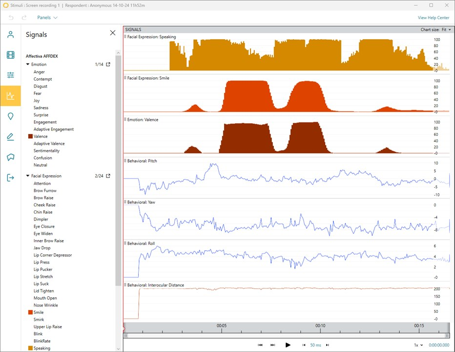
What a score means
A Joy score of 80 in one frame says the software is fairly confident that the face shows the movement it was trained to call Joy, mainly a smile. It says nothing about how big the smile is or whether the viewer is happy.
Scores run from 0 to 100, "indicating the confidence that a Facial Expression or Emotion was expressed" (Signals Overview); probability correlates with intensity "but they are not the same" (Introduction to Facial Expression Analysis). Valence runs from -100 to 100, 0 neutral.
Keep the expression and the emotion apart. The Signals Overview aligns its emotion scores with EMFACS-7, the emotion version of FACS, without listing the inputs to Joy; in practice Joy rises with a smile. Its table calls a smile "Normally a sign of enjoyment" and says a Brow Furrow "Can indicate concentration, confusion or dislike": note normally and can. The same facial movement can accompany different feelings, and the same feeling can show differently or not at all, across people, situations, and cultures (Barrett et al., 2019), and measures of emotion agree only in part (Mauss & Robinson, 2009). So write "Joy was present," never "viewers felt joy"; the step between them is an inference the researcher must defend. Valence counts Smile among its inputs, so Positive Valence moves with Joy, and Engagement "measures the level of expressiveness and involvement" (module page), not attention.
From scores to present or absent
An average of confidence scores mixes weak evidence everywhere with strong evidence in a few frames, so the FEA thresholding R Notebook marks an expression present in each frame where its score passes the threshold. The defaults are Emotion 50, Valence +50 (Positive Valence) and -50 (Negative Valence), and Action Units 50. "50% confidence represents a moderately strong display of facial response," 75 or higher is high confidence, and 25 or lower "means that only 1 in 4 manual coders has classified the facial expression as present." Explore pilot data, then fix the threshold before testing; it is a measurement decision, like the AOI shape if you did Workshop 2: mean Joy time in the commercial was 17.76 percent at a threshold of 25, 10.37 at 50, and 4.21 at 75 (simulated). Report it.
Time present, segments, and viewers
The FEA thresholding Metrics give, per respondent and interval (a stimulus, an annotation, or a scene), the percent of stimulus time with the expression present and the number of segments, separate stretches of presence that show "how often it was expressed"; each segment's onset and offset is marked as an event. The SIMULATED export calls the first Percent of time present and the second Number of segments; the manuals print no header row, so verify both on the lab machine. Joy present for 6 s of the 60 s commercial, in two stretches, gives a Percent of time present of 10 and a Number of segments of 2. The binning annotation cuts the commercial into six 10 s bins, so the Commercial value is the mean of the six bin values. How many viewers showed the expression in a time window is what the FEA thresholding Aggregation draws in the Aggregate Replay. This course counts a viewer when Percent of time present is above 0; the manual does not state the Aggregation's own rule, so verify it on the lab machine.
Face detection, data quality, and head pose
After post processing, Quality Metrics report "the percentage of frames successfully analyzed," which is "not an indicator of overall accuracy or face quality." Live values run lower, because AFFDEX processes a 30 Hz camera at 15 Hz while recording, so 40 to 50 percent "is not cause for concern" before post processing. Frames are lost with a bright background, a face darker than 30 on the 0 to 255 brightness scale (the manual states this rule right after a sentence about bright backgrounds, so which failure it describes is an item to verify on the lab machine), a Facebox (the box around the detected face) under 100 px wide, hair, hands, or glasses over the face, talking, or a head turned beyond "5-10 degrees up/down and 40 degrees left/right" (Enabling Affectiva AFFDEX in iMotions). No manual states a minimum for keeping a respondent; the lab's rule, written before collection, is a Data quality of at least 80 percent, which kept 30 of 32 viewers (range 87.8 to 98.8 percent, simulated).
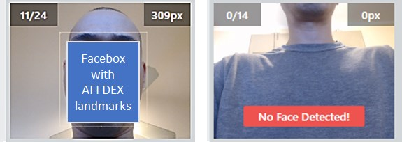
How well does AFFDEX read faces?
Validity here means agreement with a reference: FACS coders, facial electromyography (EMG, the electrical activity of the facial muscles), or the expression a person was asked to make. AFFDEX reached acceptable accuracy for posed, prototypical expressions in standardized photographs and was less accurate for the natural expressions of 110 participants viewing emotionally evocative pictures (Stöckli et al., 2018). When twenty participants imitated happy, angry, and neutral expressions while video and facial EMG were recorded, Affectiva scores in iMotions and EMG showed comparable validity (Kulke et al., 2020). Across eight commercial classifiers, accuracy was lower for spontaneous than for posed expressions (Dupré et al., 2020), and validations of FaceReader, another system, likewise take FACS coding as the reference (Lewinski et al., 2014) (Skiendziel et al., 2019). Facial movement also carries information in how it unfolds over time (Krumhuber et al., 2023). AFFDEX reads frontal, evenly lit, clear expressions best and an audience's small spontaneous ones least well, one reason the data are mostly zeros.
Writing the methods paragraph
The model condenses section (a) of results_text.md. The Signals Overview places AFFDEX SDK 5.2 in iMotions 10.1.2 and later and says to finish a study on its starting SDK, so confirm the version on the lab machine and fill the brackets there.
Thirty-two respondents each viewed a 60 s Baseline, one 60 s video commercial, a 15 s Recovery, and a short questionnaire, in that order. The respondent camera ([model], [resolution] at [frame rate]) recorded each face in iMotions Lab (Version 11.1; iMotions A/S, Copenhagen, Denmark, 2026), and every frame was post processed with Affectiva AFFDEX (SDK [version]) (McDuff et al., 2016). The FEA thresholding R Notebook marked each expression present or absent per frame at its default thresholds (Emotion 50; Valence +50 and -50), and a binning annotation divided the commercial into six 10 s bins. The FEA Metrics Export supplied Percent of time present and Number of segments per respondent and interval for Joy, Surprise, Brow Furrow, Positive Valence, and Negative Valence; Engagement is reported as a mean raw score (0 to 100). Data quality, the percentage of frames successfully analyzed, had to reach 80 percent, a rule fixed before collection and the lab's own because the manuals state no minimum. It excluded V07 (61 percent, glare on the glasses lenses) and V19 (72 percent, looked down at a phone), leaving 30 respondents (17 women and 13 men; age M = 27.4 years, SD = 5.4; Data quality M = 94.8 percent, SD = 2.61). All numbers are simulated for teaching.
Writing "AFFDEX measured how the viewers felt." It scored facial expressions where it found a face, at a threshold you chose; say so.
Help center articles for this section: Introduction to: Facial Expression Analysis, Affectiva (AFFDEX) Signals Overview, R Notebook (FEA): Facial expression analysis thresholding and aggregation, Enabling Affectiva AFFDEX in iMotions, and Facial Expression Analysis: Why does AFFDEX show low QA in subject replay?
Post processing, thresholds, and exports
This section produces the numbers that section 06 explained. Practice on your own pilot (exercise 5), never on Nike Campaign Ad Evaluation or another lab study, because these steps add data to a study, and write every setting into the plan; a reader needs them to reproduce a number (Appelbaum et al., 2018).
7.1 Post process every face recording
Why. Post processing runs AFFDEX again on the saved face video. The replay article warns that "maximally 50% of the video frames were analyzed live," and the thresholding article recommends "post processing all respondent videos before starting an analysis of the facial expression data."
- Open the dialog. Right-click the study in the Library and choose Post Processing > Affectiva; the submenu lists other processors too. You should see "Affectiva AFFDEX Processing." In 11.1 the study's RECORDED DATA tab also shows an Affectiva heading with a Post Process button, beside Exposure summaries and its Calculate button; the menu route is the one the manual documents. Common mistake. Choosing Find and blur faces, a different job.
- Choose what to process. Leave "Ignore previous AFFDEX processed data" unticked the first time; tick it only to redo processing after a fix. The manuals do not describe "Increase speed through parallel processing of respondent videos per stimulus," so leave it as you find it and verify on the lab machine what it changes. The help article's slider (n = 1) and its OK button are not in the 11.1 dialog. Tick Select all under "Select respondents to process:" and under "Select stimuli to process:". You should see "Process N videos," with N equal to respondents times stimuli. In the lab's remote study, and in the demonstration study in the figure below, the stimulus Select all box was unticked when the dialog opened (in the remote study the calibration stimuli were left out), so the button read "Process 700 videos" until ticking it gave "Process 924 videos"; the help center requires all stimuli for remote study data. Common mistake. Processing only the commercial, which leaves the Baseline with live data alone.
- Process and wait. A "Background Jobs" window opens (tabs Job Queue, Completed, and Job Errors), one "Affdex batch" job per respondent, and the status bar counts the jobs beside the Background Jobs button. Each video takes "roughly the same as the duration of that video," so run a study overnight; closing the window does not stop the jobs. You should see every job under Completed and none under Job Errors. Common mistake. Clicking Stop All Jobs to close the window.
- Apply the exclusion rule. Each recording now shows a quality value, "only representative of the percentage of frames successfully analyzed," not of accuracy. Export the values with Export on the study's RECORDED DATA tab (a _DataQuality.txt file with the effective sampling rate and the percentage of data obtained; verify on the lab machine how its rows and its AFFDEX column are laid out, and say in the plan which value counts), copy them into the log's Face detection percent, and apply the 80 percent rule before anyone looks at an expression: V07 (61.0) and V19 (72.0) go and V20 (87.8) stays (simulated).
What can go wrong. Options grayed out despite the license: send diagnostics with the iMotions Support button. Missing or wrong signals: check the video, light, contrast, and Facebox, then re-run with "Ignore previous AFFDEX processed data" ticked. Other faces, or a face in a corner: Define facebox in the replay and post process again. "access denied" or "file not found" errors: a Windows administrator.
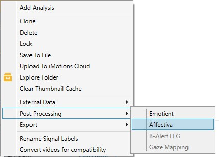
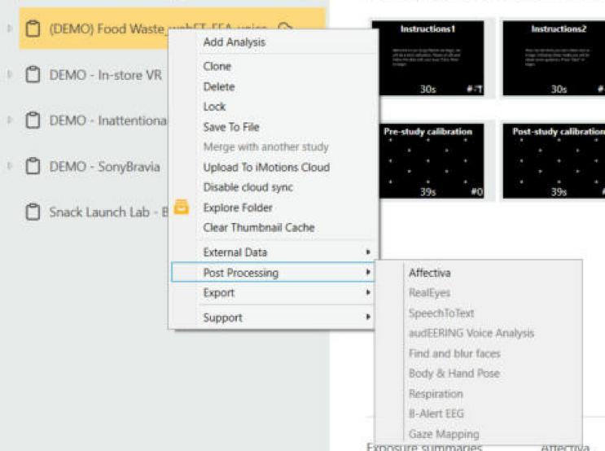
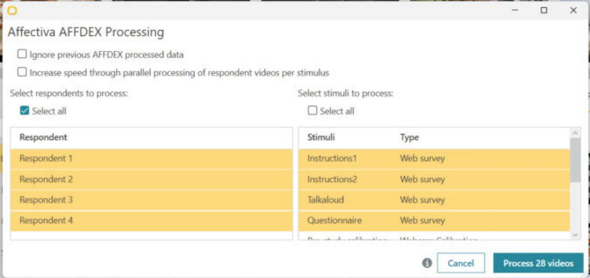
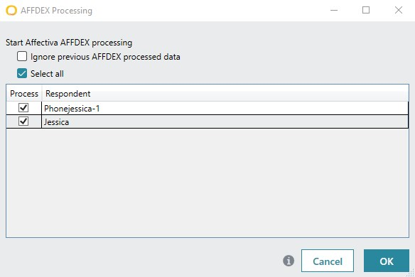
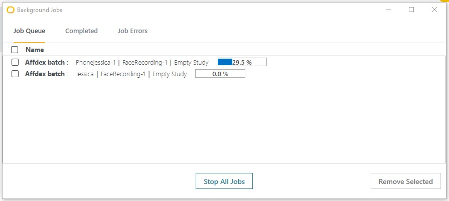
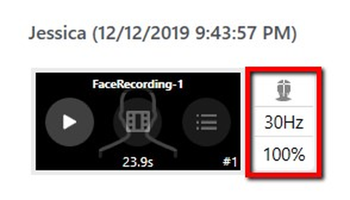
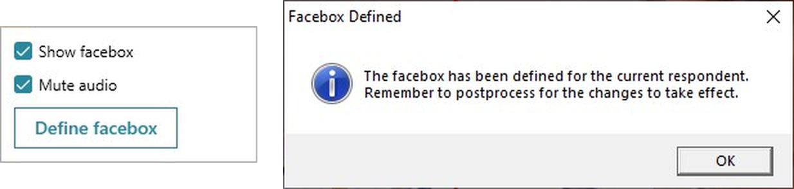
7.2 The analysis and the FEA thresholding flow
Why. An analysis is a named selection of respondents and stimuli for processing, replays, and exports that leaves the raw study untouched; the FEA thresholding notebook runs inside it.
- Create it. Right-click the study and choose Add Analysis. Name it by its settings (for example Kept30_Threshold50) and leave the excluded viewers out in the segmentation steps (verify how on the lab machine), so that every count of viewers counts kept viewers.
- Add the thresholding flow. On SIGNAL PROCESSING click "+" (Add new Flow), choose Affectiva AFFDEX under Devices and "FEA thresholding" under Algorithm. You should see the flow's description, a "Classify each expression as short or long" option (leave it off), and Emotion, Facial expression, and Behavioral thresholding sections. Keep the default thresholds: Emotion 50, Valence +50 and -50, Action Units 50. Verify on the lab machine the batch and per channel threshold fields, which the screenshot shows collapsed. For the sensitivity analysis, make two more analyses at batch thresholds of 25 and 75. Common mistake. Changing a threshold after seeing the data.
- Add the aggregation flow. Click "+" again for "FEA thresholding Aggregation," the optional step that draws the aggregation graphs and "only works if you have also added the 'FEA thresholding' algorithm in this analysis." Set Time bin length [ms] and Time bin overlap [ms] (the screenshot shows 500 and 0; no default is stated, so write yours into the plan) and tick "Display each aggregated curve as a percentage of the total number of respondents."
- Choose the stimuli (Baseline, commercial, Recovery) on SELECT STIMULI and complete the analysis. If an export later fails, confirm both flows and 'FEA thresholding' in the Signals menu, then right-click the analysis and choose 'Recalculate'.
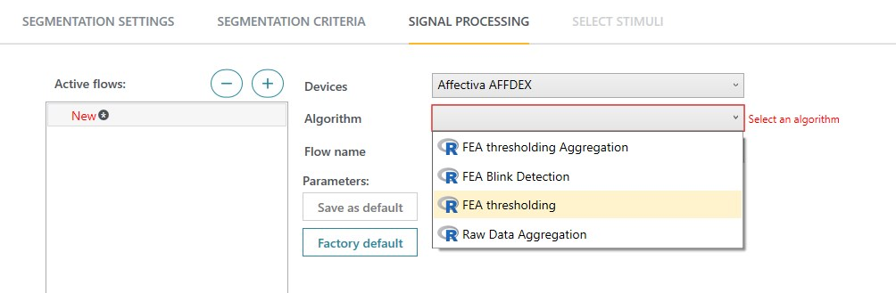
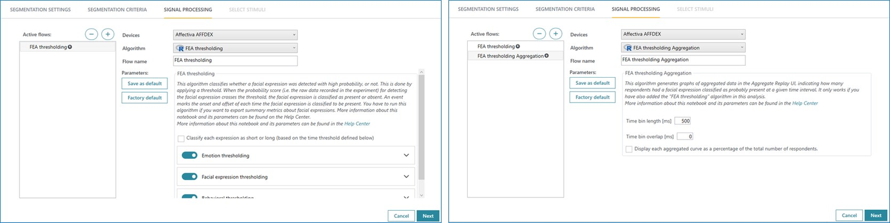
![SIGNAL PROCESSING tab of an analysis on the lab computer, beside SEGMENTATION SETTINGS, SEGMENTATION CRITERIA, and SELECT STIMULI: Active flows lists AFFDEX thresholding, AFFDEX thresholding Aggregation, and Voice Analysis with minus and plus buttons; AFFDEX thresholding is selected with Devices Affectiva AFFDEX, Save as default and Factory default buttons, and an FEA thresholding panel describing the algorithm, an unticked box to classify each expression as short or long, and switched-on groups for EMFACS Expression thresholding, Facial Action Units thresholding, Behavioral thresholding, and Other Measures thresholding, above Cancel and Next](../assets/ws3/figures/live/live_fea_thresholding_flow.png)
7.3 Replay, bins, and the group view
- Look before you count. Click the commercial in the analysis's Stimulus bar, then 'Replay', then 'Edit result', and tick the 'Respondent', 'Signals', and 'Annotations' panels: the Respondent Replay, one viewer at a time. In the Signals menu show Emotion: Joy and, under "FEA thresholding," Joy's present (1) or absent (0) channel. You should see 1 wherever Joy passes 50, and onset and offset events in the Markers menu. Common mistake. Skipping the replay; talking or a hand at the face shows only there.
- Make the bins. The help center makes equal bins with an automated annotation, one that iMotions places from events: in the replay, open the Annotations Menu and Panel, create one running from the start to the end of the commercial, tick 'Subdivide intervals', and set 'Length of each division' to 10 s. Verify the button labels on the lab machine, and name the bins Bin_01 to Bin_06 if the screen allows. You should see six 10 s bars in the Annotations panel. The Aggregate Replay shows only stimulus annotations, so if the bins are missing there, draw them with Create Stimulus Annotation instead (a Key pressed at each edge, then dragged to the exact second). Common mistake. Respondent annotations, which must be repeated for every viewer.
- See the group. Click the commercial, then 'Aggregate', then 'Edit result'. The Aggregate Replay shows the FEA thresholding Aggregation graph: the percentage of respondents with the expression present in each time bin. You should see a stepped graph; verify on the lab machine that it appears for a video in 11.1. Common mistake. Reading a peak as intensity; it counts viewers.
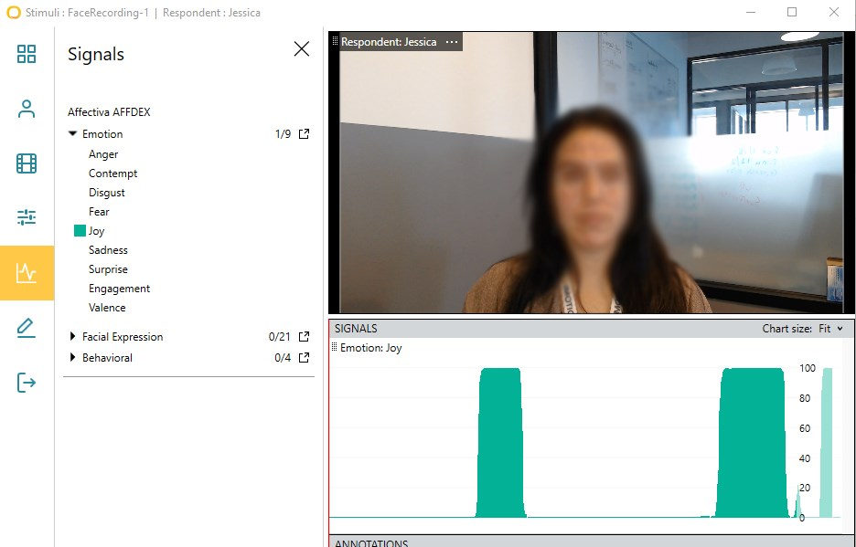
7.4 The exports
An export is a file iMotions writes for other software; in the analysis, click Export in the bottom bar.
- FEA Metrics Export, the file for the statistics. Export > R PROCESSING > Individual metrics exports > FEA Metrics Export (listed under Facial Expressions, beside FEA Blink Detection Metrics Export and FEA Raw Data Statistics Export): switch it on, open it with its arrow, tick Expression metrics (how often and how long each expression was present "for each respondent and each time interval (Stimulus, Annotation, Scene)") and, if wanted, Expression table (every instance with onset, offset, and duration), choose the FEA groups under "Please select the FEA group(s) to include," include Annotation markers, and click Export individual files at the top right. You should see new files in the export folder; their names and format (.txt or .csv) are items to verify on the lab machine with a pilot export. The manual's example has a #METADATA block, then one row per stimulus or annotation with columns such as Count Frames, Joy Threshold, and a Joy time percentage; the SIMULATED file has one row per expression with Percent of time present and Number of segments, so reshape a real export if needed. Common mistake. Looking for it on the study's EXPORT tab; it exists only in the analysis that ran the flow.
- FEA Raw Data Statistics Export. On the same tab, the export the 2023 manual calls "Affdex Raw Data Statistics Export" (listed in 11.1 as FEA Raw Data Statistics Export) gives means, standard deviations, quantiles, and moments of each raw score per stimulus, scene, or annotation without a flow, a source for a mean raw score such as Engagement's.
- Sensor Data (Export > BUILT IN PROCESSING > Sensor Data): one frame by frame file per respondent; under File info, "Processed and imported data" adds the 1 and 0 channels, 'Include Annotation markers' the bins, and "User-generated events" the live markers. It checks timing, not the hypotheses.
The study's EXPORT tab also offers Respondent Cam Recordings: "a separate video-file for every slide (i.e., stimulus) and respondent," each an identifiable face video. Nothing here needs them; export them only with consent and the instructor's approval, never to a personal drive or cloud folder.
Open every export with Excel's Text Import Wizard, not by double-clicking: File > Open > Browse, All Files, Delimited, Comma, Advanced with a dot as the decimal symbol, Finish. Start the SIMULATED files at row 2 (line 1 is a # SIMULATED comment) and a real export at its row of column names below the #METADATA block (verify). Keep the original unchanged and work on an .xlsx copy.
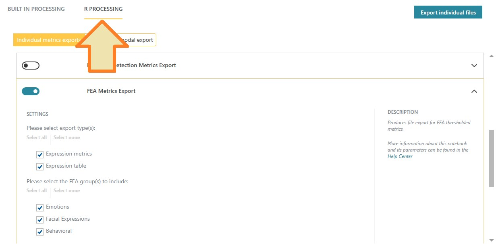
![Analysis export page on the lab computer with the BUILT IN PROCESSING and R PROCESSING tabs, R PROCESSING selected, the Individual metrics exports and Single multi-modal export buttons, an Export individual files button at the top right, switches for Eyetracker Blink Detection Metrics Export, FEA Blink Detection Metrics Export, and FEA Metrics Export, and the FEA Metrics Export opened to show Please select export types with Expression metrics and Expression table ticked, the start of Please select the FEA groups to include, and a description reading Produces file export for FEA thresholded metrics](../assets/ws3/figures/live/live_fea_export.png)
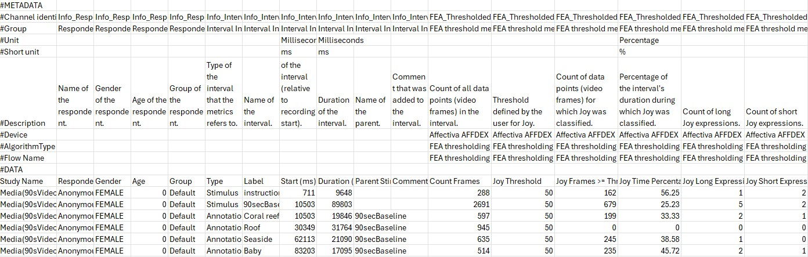
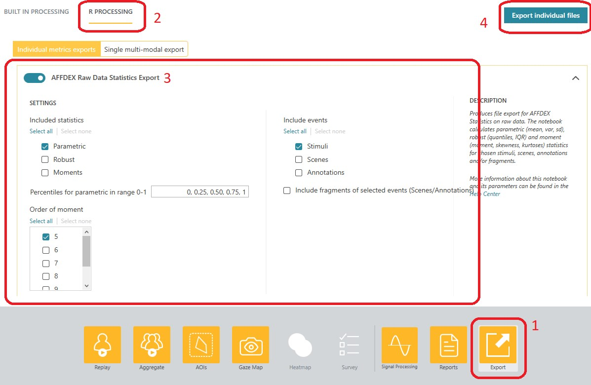
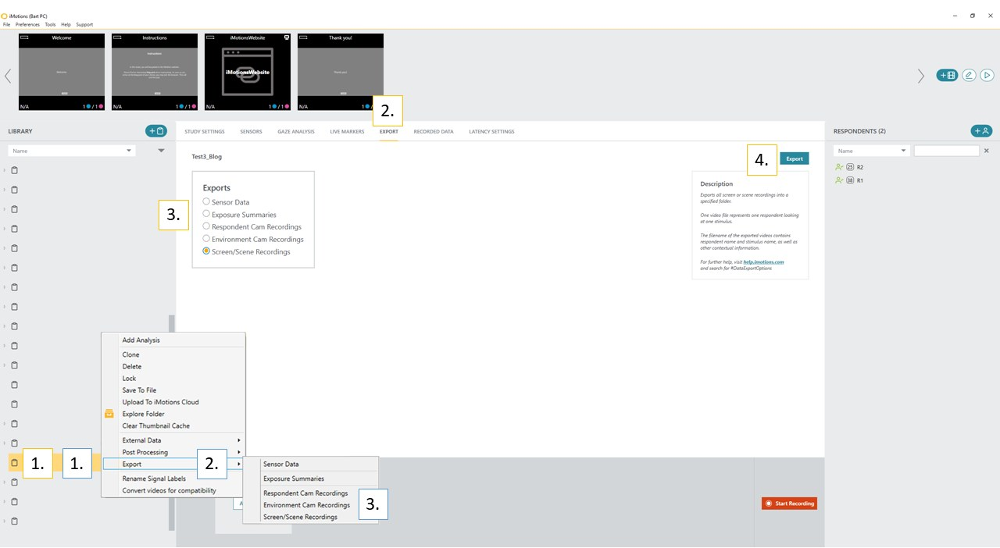
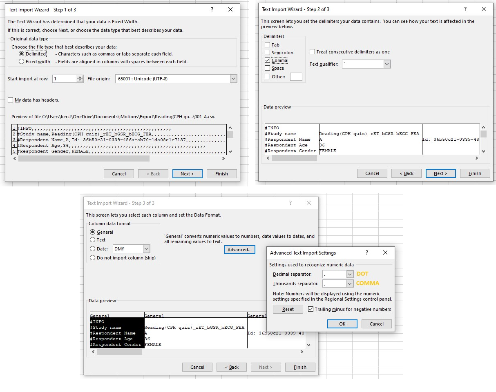
Help center articles for this section: Facial Expression Analysis: Importing and Post Processing Videos, Respondent Camera/Video Analysis Troubleshooting, Facebox for Facial Expression Analysis, R Notebook (FEA): Facial expression analysis thresholding and aggregation, Aggregate Replay, Using Annotations, R Notebooks (FEA): AFFDEX Raw Data Statistics Export, Export: Sensor Data, Export: Data Quality Statistics, Export: Respondent, Environment, and Scene Camera/Screen Recordings, Opening Data Export Files in Excel.
Testing the hypotheses: zero inflated data, signed ranks, thresholds, and moments
This section runs the three tests on the SIMULATED export, in R with analysis.R (output in analysis_output.txt) and then in Excel. Every statistic is simulated and matches that output exactly.
From 1,728 rows to 30 viewers
SIMULATED_fea_metrics.csv has one row per respondent, interval, and expression: 32 respondents, nine intervals (Baseline, Commercial, Recovery, Bin_01 to Bin_06), and six expressions make 1,728 rows. Its header layout is modeled on the manual's description, so verify it on the lab machine. Two sister files hold the export rerun at thresholds of 25 and 75, and SIMULATED_fea_survey.csv holds Ad_liking_1to7. The exclusion rule removes V07 and V19. The viewer, not the row, is the unit of analysis.
The zero problem
Joy was absent for the whole Baseline in 22 of 30 viewers, and 113 of the 180 viewer by bin values (62.8 percent) are exactly 0 (simulated). A variable with a pile of zeros and a long right tail is zero inflated, and its mean drifts away from the typical viewer: mean Joy time in the commercial was 10.37 percent but the median 5.86, and the Baseline mean was 1.61 against a median of 0.00 (simulated). Three habits follow: report the median beside the mean, report how many viewers showed the expression at all, and test with methods that do not need normal data.
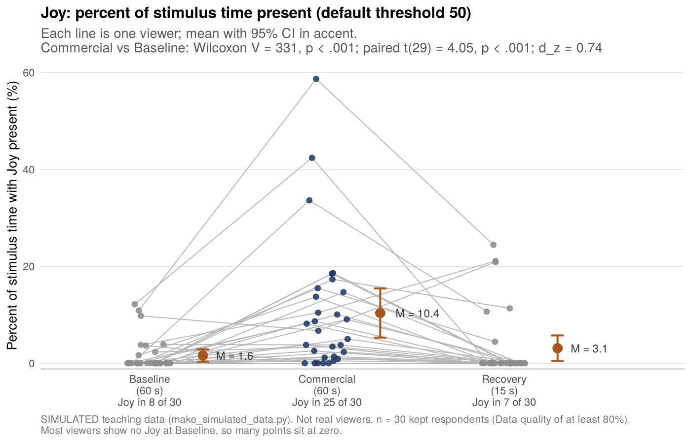
H1: why the signed rank test is primary
Subtract each viewer's Baseline value from the Commercial value. Set aside the zero differences, rank the rest by size ignoring the sign, and add up the ranks of the positive ones. If the commercial changed nothing, positive and negative ranks would balance. The Wilcoxon signed rank test asks how far the sum is from that balance; because it uses ranks, a few huge differences cannot dominate.
23 differences positive, 3 negative, 4 zero. V = 331 (negative ranks 20.0), p < .001. Effect size: the matched pairs rank biserial correlation, (331 − 20) / (331 + 20) = .89. The Hodges-Lehmann median difference, the median of all pairwise averages of the differences, was 8.36 percentage points, 95% CI [4.48, 13.64].
A Baseline full of zeros guarantees skewed differences (Shapiro Wilk test of normality, W = .816, p < .001), so the plan names the signed rank test before the data arrive. The paired t test is reported beside it, with dz, the mean difference divided by the SD of the differences (Lakens, 2013): a difference of 8.76 percentage points, 95% CI [4.34, 13.18], t(29) = 4.05, p < .001, dz = 0.74, 95% CI [0.33, 1.14] (simulated). The tests agree, and the report says so.
Eight of 30 viewers showed any Joy at Baseline and 25 of 30 during the commercial. The McNemar test compares these paired proportions through the viewers who changed status, 1 with Joy only at Baseline and 18 only during the commercial: p < .001 (simulated). "How many viewers" and "how much of the time" answer different questions, and a client usually asks the first. The 15 s Recovery is descriptive (M = 3.10, 7 of 30 viewers, simulated).
H2: moments, not averages
The share of viewers with Joy present was 23.3, 26.7, 23.3, and 30.0 percent in Bin_01 to Bin_04, then 66.7 percent in Bin_05 (20 of 30, 95% CI [47.2, 82.7], an exact interval from the binomial distribution) and 53.3 in Bin_06; mean Joy time was 4.83, 7.73, 6.42, 5.41, 24.36, and 13.43 percent (simulated). An expressive viewer is expressive in every bin, so a viewer's six values are not independent. A linear mixed effects model, pct ~ bin + (1 | respondent), gives each viewer a random intercept, a personal level of expressiveness (Bates et al., 2015), with Satterthwaite degrees of freedom, an approximation suited to mixed models, from lmerTest (Kuznetsova et al., 2017). The bin factor was significant, F(5, 145) = 8.52, p < .001. Respondent variance (150.93) against residual variance (199.04) gives an intraclass correlation (ICC) of .431: more than two fifths of the remaining variance lay between viewers (simulated).
An omnibus F says the bins differ, not where. Two planned contrasts compare each late bin with the mean of Bins 1 to 4: Bin_05 was 18.26 percentage points higher, t(145) = 6.34, 95% CI [12.56, 23.95], and Bin_06 was 7.33 points higher, t(145) = 2.55, 95% CI [1.64, 13.03]. The Holm adjustment keeps the chance of any false positive across the two at .05 by doubling the smaller p and leaving the larger, so Bin_05's Holm p stays below .001 and Bin_06's equals its raw p, .012. The residuals were not normal (Shapiro Wilk W = .895) and spread more as the bin mean grew, so the Friedman test, which ranks each viewer's six values, is the check: χ2(5) = 34.68, p < .001, Kendall's W = .23, modest agreement among viewers about which bins rank highest. A model of the square root of the percent agreed, F(5, 145) = 9.10, p < .001 (simulated). Of the other expressions, described but not tested, Surprise peaked in Bin_03 (M = 7.57) and Engagement, a raw mean score, rose from 7.44 at Baseline to 15.25 (simulated). The bins are moments of one commercial, not a sample of commercials (Judd et al., 2012) (Brysbaert & Stevens, 2018).
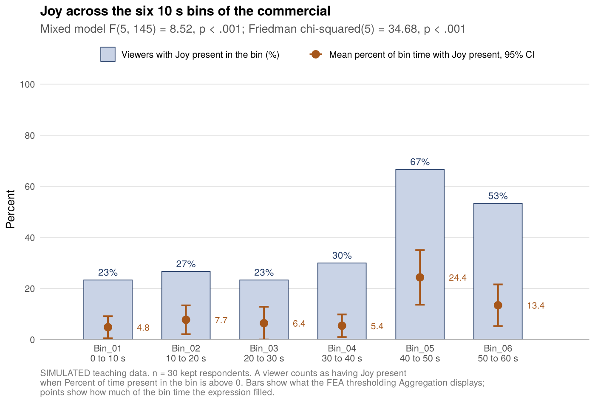
The threshold sensitivity analysis
A sensitivity analysis repeats a test under another defensible choice. The notebook was rerun with a batch threshold of 25 and of 75, and H1 was tested again.
| Threshold (simulated) | Baseline M % | Commercial M % | Viewers with Joy, Baseline / Commercial | Difference [95% CI] | V | t(29) | dz |
|---|---|---|---|---|---|---|---|
| 25 | 3.44 | 17.76 | 13 / 28 | 14.32 [8.35, 20.28] | 389 | 4.91 | 0.90 |
| 50 (planned) | 1.61 | 10.37 | 8 / 25 | 8.76 [4.34, 13.18] | 331 | 4.05 | 0.74 |
| 75 | 0.56 | 4.21 | 7 / 18 | 3.65 [1.28, 6.02] | 183.5 | 3.15 | 0.57 |
Note: SIMULATED, n = 30. Wilcoxon p < .001 at all three; paired t p < .001 at 25 and 50, p = .004 at 75. The direction held and the size did not: the commercial mean at 25 was 1.71 times the value at 50, and at 75 it was 0.41 times. The planned threshold stays primary, and the others are reported as a sensitivity analysis planned in advance.
H3: Positive Valence and liking
The Pearson correlation between each viewer's Positive Valence time and Ad_liking_1to7 was r(28) = .45, 95% CI [.11, .70], p = .012; the Spearman correlation, computed on ranks and so less sensitive to a few very expressive viewers, was rho = .41, 95% CI [.05, .68], p = .023. Each liking point went with 4.98 more percentage points of Positive Valence time, 95% CI [1.20, 8.75], and liking accounted for .21 of the variance (R squared). Positive Valence time was skewed (Shapiro Wilk W = .763) and liking ties often, so both coefficients are reported (simulated).
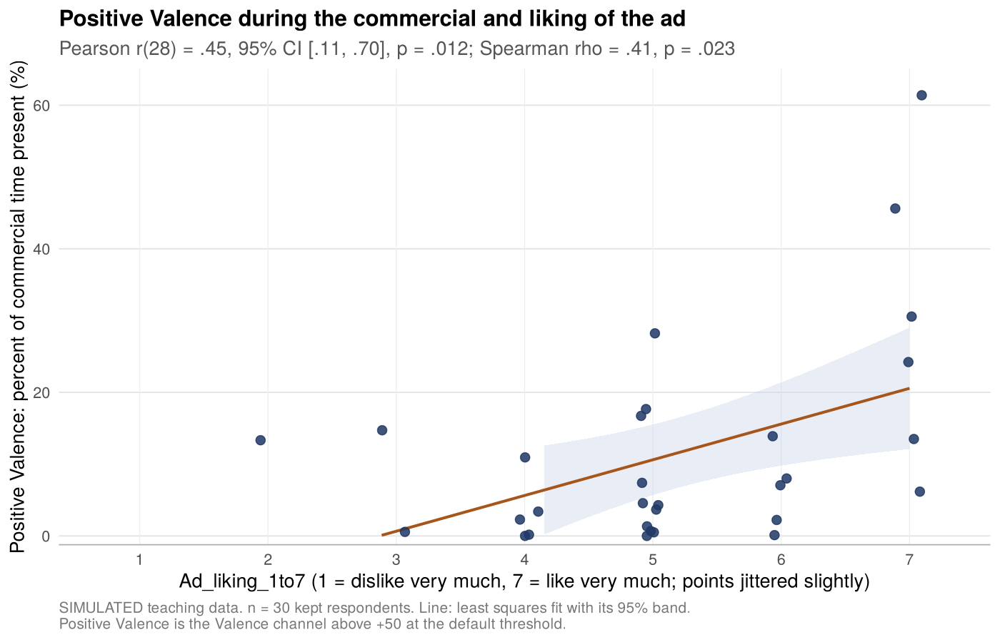
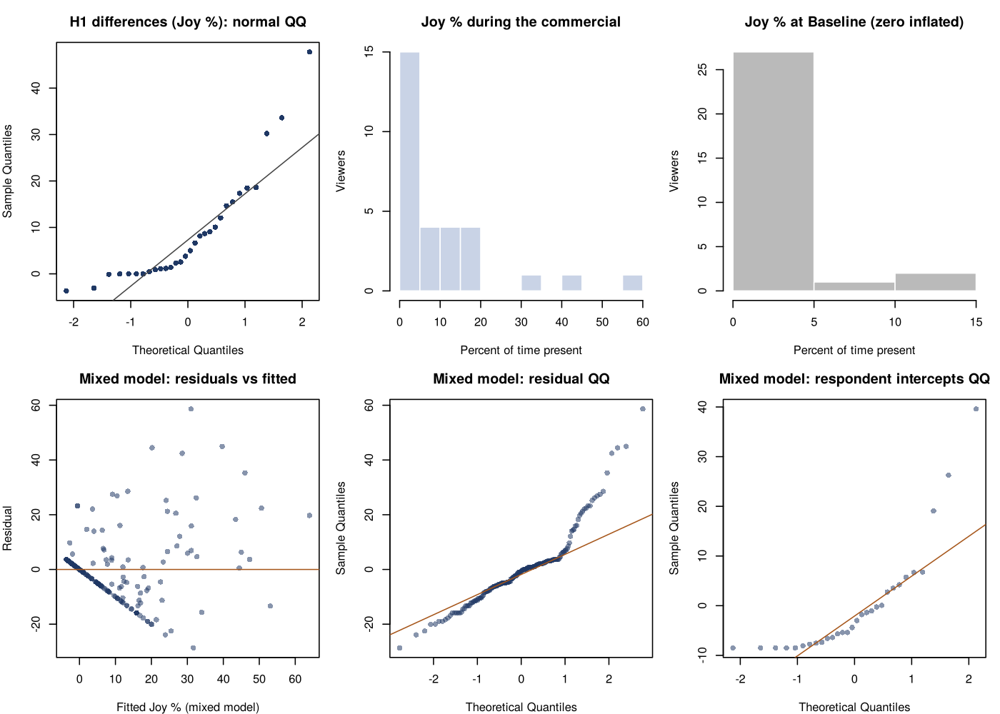
The script, line by line
Code from analysis.R, in order, with its output of October 8, 2026.
The Excel route
Without R, use SIMULATED_fea_analysis.xlsx and analysis_excel_walkthrough.md. Import with the Text Import Wizard as the Opening Data Export Files in Excel article describes: File > Open > Browse, All Files, Delimited, start at row 2 (line 1 is a # SIMULATED comment), Comma, a dot as the decimal symbol under Advanced, Finish. Never replace NA with 0. Then:
| Quantity | Cell | Formula | Simulated result |
|---|---|---|---|
| Keep | Data!L2 | =IF(K2>=80,"Yes","No") | No for V07, V19 |
| Baseline Joy (%) | H1!C5 | =SUMIFS(Data!$H$2:$H$1729,Data!$B$2:$B$1729,$A5,Data!$F$2:$F$1729,"Joy",Data!$D$2:$D$1729,"Baseline") | per viewer |
| Difference | H1!E5 | =ROUND(D5-C5,2) | per viewer |
| Rank of absolute difference | H1!G5 | =IF(E5=0,"",RANK.AVG(F5,$F$5:$F$34,1)-COUNTIF($E$5:$E$34,0)) | per viewer |
| p, paired t | H1!L16 | =T.TEST(C5:C34,D5:D34,2,1) | 3.46e-04 |
| Cohen's dz | H1!L21 | =L11/L12 | 0.74 |
| Exact McNemar p | H1!L34 | =MIN(1,2*BINOM.DIST(MIN(L32,L33),L32+L33,0.5,TRUE)) | 7.63e-05 |
| V | H1!L41 | =SUMIFS(G5:G34,H5:H34,1) | 331 |
| Wilcoxon p | H1!L48 | =2*(1-NORM.S.DIST(ABS(L47),TRUE)) | 8.26e-05 |
| Viewers with Joy, Bin_01 | Bins!B38 | =COUNTIFS(Data!$F$2:$F$1729,"Joy",Data!$D$2:$D$1729,B$4,Data!$L$2:$L$1729,"Yes",Data!$H$2:$H$1729,">0") | 7, 8, 7, 9, 20, 16 |
| F | Bins!S17 | =S15/S16 | 8.52 |
| ICC | Bins!S20 | =S19/(S19+S16) | 0.431 |
| Friedman chi-squared | Bins!S25 | =S23/S24 | 34.68 |
| Pearson r | H3!M12 | =CORREL(H4:H33,D4:D33) | 0.45 |
| Spearman rho | H3!M23 | =CORREL(I4:I33,J4:J33) | 0.41 |
Type the sheet names H1 and H3 in single quotes inside a formula ('H1'!L10), because they look like cell addresses. T.TEST's fourth argument 1 means paired. The repeated measures F equals the mixed model F in this balanced design. Excel's large sample interval for dz differs slightly from R's, so say which you used, and apply Holm to the Bins sheet's unadjusted contrast p values by hand. The Hodges-Lehmann and binomial intervals and the square root model need R.
Help center articles for this section: R Notebook (FEA): Facial expression analysis thresholding and aggregation, Opening Data Export Files in Excel, and General Data Analysis and Interpretation.
Writing the results: zero inflated comparisons, moments, and honest pictures of faces
A results section reports what was found, in the planned order, and leaves interpretation to the discussion. Readers expect the sample and its data quality, descriptives, a test and an effect size with its interval for each hypothesis, and captions that stand alone (Appelbaum et al., 2018). Every statistic here is simulated; the form is the lesson.
The shape of a face study's results
Open with the sample: 30 of 32 respondents after two exclusions, Data quality M = 94.8 percent (simulated). State once that H1 differences are Commercial minus Baseline and that the default threshold of 50 applies unless a sentence says otherwise. For H1, give each period's mean, SD, and median, the viewers with any Joy, the signed rank test with its effect sizes, and the paired t test with dz in a clause; then the threshold sensitivity. For H2, give the proportion of viewers per bin beside the mean, the mixed model F, the Holm adjusted contrasts, and the Friedman check. For H3, give both correlations. Close with the other expressions, labeled descriptive, and the assumption checks.
APA numbers for a face study
APA style keeps numbers readable (simulated values): M = 10.37%, SD = 13.57, Mdn = 5.86; the statistic with its degrees of freedom, t(29) = 4.05, F(5, 145) = 8.52, r(28) = .45, or V = 331; then p; then the effect size with its interval, dz = 0.74, 95% CI [0.33, 1.14]. Give exact p values to three decimals (p = .012), and p < .001 only below that. Drop the leading zero for values that cannot exceed 1 (r = .45, ICC = .431). Give counts with their base, 25 of 30 (83.3%). Write "did not reach significance" for a test above .05, never "trend toward significance," and write that an expression was present, never that viewers felt an emotion.
Model paragraphs (simulated)
Quoted from section (b) of results_text.md, which also holds the threshold, other expression, and assumption paragraphs. One change: the Shapiro Wilk W is written without its leading zero (W = .816), because W cannot exceed 1.
Viewers showed Joy for a larger share of the commercial than of the Baseline. Joy was present for M = 10.37% of the commercial (SD = 13.57, Mdn = 5.86) and for M = 1.61% of the Baseline (SD = 3.40, Mdn = 0.00), n = 30, a mean difference of 8.76 percentage points, 95% CI [4.34, 13.18]. Joy was absent for the whole Baseline in 22 of 30 viewers, so the data are zero inflated, and the Wilcoxon signed rank test is the primary test: V = 331, p < .001 (26 nonzero differences: 23 positive, 3 negative, and 4 ties at zero), with a matched pairs rank biserial correlation of .89 and a Hodges-Lehmann median difference of 8.36 percentage points, 95% CI [4.48, 13.64]. The paired t test agreed, t(29) = 4.05, p < .001, dz = 0.74, 95% CI [0.33, 1.14]. Eight of 30 viewers (26.7%) showed any Joy at Baseline and 25 of 30 (83.3%) during the commercial; one viewer showed Joy only at Baseline and 18 only during the commercial, exact McNemar test p < .001. The differences were not normally distributed (Shapiro Wilk W = .816, p < .001), which is why the signed rank test is primary. During the 15 s Recovery, Joy was present for M = 3.10% of the time (SD = 7.08, Mdn = 0.00; 7 of 30 viewers).
Joy was concentrated in the last two bins. The mean Percent of time present was 4.83%, 7.73%, 6.42%, 5.41%, 24.36%, and 13.43% in Bin_01 to Bin_06 (SDs 11.59, 15.14, 17.18, 11.84, 28.69, and 21.86), and the proportion of viewers with Joy present was 23.3% (7 of 30), 26.7%, 23.3%, 30.0%, 66.7% (20 of 30, 95% CI [47.2%, 82.7%]), and 53.3% (16 of 30, 95% CI [34.3%, 71.7%]). The bin factor was significant in the mixed model, F(5, 145) = 8.52, p < .001. Relative to the mean of Bin_01 to Bin_04, Joy was higher by 18.26 percentage points in Bin_05, SE = 2.88, t(145) = 6.34, Holm p < .001, 95% CI [12.56, 23.95], and by 7.33 percentage points in Bin_06, SE = 2.88, t(145) = 2.55, Holm p = .012, 95% CI [1.64, 13.03]. The random intercept for respondent (variance = 150.93, residual variance = 199.04) gave an ICC of .431 after adjustment for the bin effect (.364 in a model without it), so viewers differed substantially in how much Joy they showed. The Friedman test agreed, chi-squared(5) = 34.68, p < .001, Kendall's W = .23, as did a mixed model of the square root of Percent of time present, F(5, 145) = 9.10, p < .001. Joy time percent was exactly 0 in 113 of the 180 respondent by bin values (62.8%).
Positive Valence during the commercial was positively related to how much viewers liked the ad (Ad_liking_1to7: M = 5.17, SD = 1.32, range 2 to 7). The Pearson correlation was r(28) = .45, 95% CI [.11, .70], p = .012, and the Spearman correlation was rho = .41, 95% CI [.05, .68], p = .023 (t approximation, because ratings tie). Each additional point of liking was associated with 4.98 more percentage points of Positive Valence time, 95% CI [1.20, 8.75], and liking accounted for 21% of the variance in Positive Valence time (R squared = .21). Positive Valence time was strongly right skewed (Shapiro Wilk W = .763, p < .001), which is why the Spearman result is reported beside the Pearson result.
Its threshold paragraph opens and closes with the sentences to copy: "The direction of the result did not depend on the threshold, but the size did. ... The mean Percent of time present for Joy in the commercial was therefore 17.76%, 10.37%, and 4.21% at thresholds of 25, 50, and 75."
A model table
| Table 1 (simulated). Interval | Length | M (SD) | Mdn | Viewers with Joy, n (%) | Mean segments |
|---|---|---|---|---|---|
| Baseline | 60 s | 1.61 (3.40) | 0.00 | 8 (26.7) | 0.83 |
| Commercial | 60 s | 10.37 (13.57) | 5.86 | 25 (83.3) | 4.17 |
| Recovery | 15 s | 3.10 (7.08) | 0.00 | 7 (23.3) | 0.40 |
| Bin_01 | 0 to 10 s | 4.83 (11.59) | 0.00 | 7 (23.3) | 0.43 |
| Bin_02 | 10 to 20 s | 7.73 (15.14) | 0.00 | 8 (26.7) | 0.60 |
| Bin_03 | 20 to 30 s | 6.42 (17.18) | 0.00 | 7 (23.3) | 0.50 |
| Bin_04 | 30 to 40 s | 5.41 (11.84) | 0.00 | 9 (30.0) | 0.37 |
| Bin_05 | 40 to 50 s | 24.36 (28.69) | 11.34 | 20 (66.7) | 1.57 |
| Bin_06 | 50 to 60 s | 13.43 (21.86) | 3.50 | 16 (53.3) | 1.13 |
Note. SIMULATED, n = 30, threshold 50; values are Joy Percent of time present. A viewer shows Joy when the value is above 0. A segment that crosses a bin boundary counts in both bins.
A model figure caption
A caption says what is plotted, for whom, at which threshold, and what each mark means:
Time courses, honestly
A time course of expression, whether the FEA thresholding Aggregation graph in the Aggregate Replay or a bin chart, invites the reader to watch a feeling rise and fall. Its caption says how many viewers it shows after exclusions, which threshold, the bin length and overlap (the manual states no default, so report yours), and whether it counts viewers or averages time. A peak in the share of viewers is not a peak in intensity: in Bin_05, 20 of 30 viewers showed Joy, yet the median viewer's Joy filled 11.34 percent of the bin (simulated). Facial movement unfolds over time (Krumhuber et al., 2023), so show the time course, zeros included.
The client version
During the commercial, 25 of 30 viewers showed the Joy expression (mainly a smile) at least once, against 8 of 30 during the 60 s Baseline before it. It clustered late: two thirds of viewers showed it between 40 and 50 s and about half in the last 10 s, against about a quarter in each earlier stretch. Viewers who showed more positive expressions tended to like the ad more. Caveat: facial coding records expressions, not feelings; this is 30 viewers, one commercial, and one laboratory session, simulated for teaching, and the next step is to replay the commercial against the bins.
Help center articles for this section: Aggregate Replay, R Notebook (FEA): Facial expression analysis thresholding and aggregation, and Using Annotations.
Discussion and publication: what a smile can and cannot tell, what limits the claim, and where the work goes
The discussion answers the client's question from section 01, says what the answer means, names the limitations that bound it, and places the work in a literature. It is also where overclaiming happens, so every claim below is tied to a result or a source. The numbers are simulated.
What the result means
The central finding is a moment, not an average: the Joy expression appeared in about a quarter of viewers in each of the first four bins, in two thirds in Bin_05, and in about half in Bin_06, while Surprise peaked earlier, in Bin_03 (simulated). Advertising research explains why moments matter. The joy and surprise viewers showed while watching Internet video ads were linked to whether they kept watching (Teixeira et al., 2012). In a web based facial tracking study, entertainment in ads had an inverted U relation to purchase intent, and entertainment after the brand appeared related positively to purchase intent while entertainment before it did not (Teixeira et al., 2014). The useful question for the client is what was on screen between 40 and 60 s and whether the brand was there; open the study on the lab computer and replay the commercial against the bins to see. The link between Positive Valence and liking (r = .45, simulated) fits large webcam studies that predicted ad liking and purchase intent from facial responses (McDuff et al., 2015) and applications of facial expression analysis to ad effectiveness (Hamelin et al., 2017), but it rests on 30 viewers and a wide interval.
None of this shows that viewers felt joy. Facial movements do not map one to one onto feelings (Barrett et al., 2019), measures of emotion agree only in part (Mauss & Robinson, 2009), and consumer neuroscience warns against reverse inference, reading a mental state off a measured signal (Plassmann et al., 2015). The iMotions Cognitive Principles Guide agrees that facial expressions "are not necessarily a reflection of a person's internal thoughts or feelings." Write that the expression was present, and let the rating speak for the feeling.
In these simulated data, viewers showed more Joy during the commercial than during the Baseline, and the Joy was concentrated at the end: two thirds of the viewers (66.7%) showed Joy in Bin_05, and more than half (53.3%) did in Bin_06, against 23.3% to 30.0% in each of the first four bins. Surprise peaked earlier, in Bin_03 (63.3% of viewers). With a single commercial, the timing of these peaks can be linked to what is on screen only by replaying the video against the bins. Viewers who showed more Positive Valence during the commercial also reported liking the ad more, a moderate association (r = .45) with a wide interval, based on 30 respondents and on a few viewers with a high share of Positive Valence time. Because the facial coding describes what the face displayed and the rating describes what the viewer reported afterward, the two agreeing is evidence that the expression measure carries information about the response, and it is not evidence that the expression caused the liking or the reverse. The threshold analysis shows that the mean Percent of time present depends strongly on the threshold (17.76%, 10.37%, and 4.21% at 25, 50, and 75), whereas the conclusion that Joy was higher during the commercial did not. A report should therefore state the threshold and show at least one other, and should present the proportion of viewers who showed the expression beside the time percent.
Limitations of webcam facial expression analysis
- Small, rare, spontaneous expressions. In the simulated data 62.8 percent of viewer by bin values are zero. Validation is strongest for posed or deliberate expressions (Stöckli et al., 2018) (Kulke et al., 2020) and weaker for spontaneous ones (Dupré et al., 2020), so a zero means no expression passed the threshold, not that the viewer had no response.
- The threshold. Mean Joy time in the commercial was 17.76, 10.37, and 4.21 percent at thresholds of 25, 50, and 75 (simulated).
- Face detection losses. Glasses glare and a phone removed two of 32 viewers (simulated), and such losses may not be random.
- The Baseline came first. The difference also contains time in the chair and the expectation of an ad; a neutral control video or a second commercial in counterbalanced order would strengthen it.
- One commercial. Nothing generalizes to commercials without a stimulus sample (Judd et al., 2012).
- The laboratory and the camera. Viewers know a camera records their face, a demand effect that may change how freely they express.
- People differ. The ICC of .431 says viewers differ greatly in expressiveness (simulated), and display habits vary with culture and situation (Barrett et al., 2019).
- No arousal. The Introduction to Facial Expression Analysis names FEA's "inability to assess someone's emotional arousal."
- The sample. Thirty simulated viewers and three hypotheses tested without correction.
What other sensors would add
The face gives the valence side of a response. The circumplex places feelings on two dimensions, valence and arousal (Russell, 1980), and the Introduction to Facial Expression Analysis pairs FEA valence with skin conductance arousal for that reason. Skin conductance, the subject of Workshop 4, records arousal on the same timeline, which a calm face may not show. Eye tracking, the subject of Workshop 2, shows where each viewer looked when the Joy appeared: on a person, the product, or the logo. Television ad research has compared physiological, facial, and self report measures of the same ads for this reason (Micu & Plummer, 2010). No sensor says why a viewer smiled or replaces the liking question.
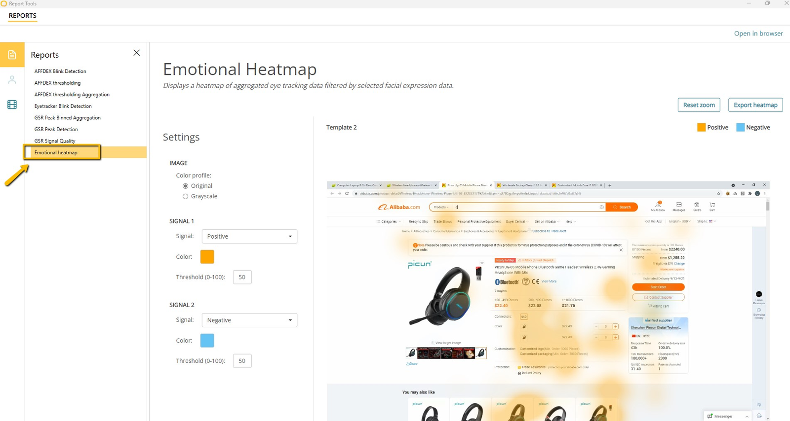
Replication, preregistration, and the ethics of face video
"Biometric measures are granular enough that you can almost always find some result," warns Designing Your Research Study, and AFFDEX offers dozens of channels. A preregistration time stamps the expressions, the primary measure, the threshold, the bins, the exclusion rule, and the tests before the first viewer sits down. A replication would add viewers and several commercials and size the study for that (Brysbaert & Stevens, 2018). A face video is the most identifiable file the lab keeps: gaze data alone can reveal more than a person expects (Kröger et al., 2020), and a face reveals identity directly. Exporting respondent camera recordings writes "a separate video-file for every slide (i.e., stimulus) and respondent," so every export multiplies copies. The industry code sets out consent, privacy, and participant rights (Neuromarketing Science & Business Association, n.d.). At Jacksonville State a study that will be published or presented goes to the IRB first, and the informed consent form names the face video, where it is stored, who may watch it, and when it is deleted.
Where this work is published, and what reviewers ask
- Journal of Advertising, Journal of Advertising Research, and International Journal of Advertising, for advertising effects and executions; the Journal of Advertising Research published two emotion measurement papers cited here (Poels & Dewitte, 2006) (Micu & Plummer, 2010).
- Journal of Marketing Research, for a theoretical contribution, as with emotion and engagement in video ads (Teixeira et al., 2012).
- Behavior Research Methods, for a method paper, where the AFFDEX and FACET validation appeared (Stöckli et al., 2018).
- Psychophysiology, for a measurement contribution, for example how webcam scores relate to physiological signals.
Reviewers ask whether the hypotheses, threshold, and exclusion rule were set in advance, whether the report meets the reporting standards (Appelbaum et al., 2018), whether the AFFDEX version and Data quality are reported, whether any sentence turns an expression into a feeling, and whether the face showed something a survey could not.
Next steps: Workshop 4, and back to Workshop 2
Workshop 4 adds skin conductance with the Shimmer3 GSR+ units. The lab's study registry records that the Nike Campaign Ad Evaluation study already pairs the respondent camera with a Shimmer3 GSR+ unit. The design logic of this workshop carries over to such a study, now with arousal: a Baseline, a within subjects comparison, and bins fixed in advance, such as the six 10 s bins of this workshop's simulated plan. If you did Workshop 2, combine its dynamic AOIs with these bins to ask whether the Joy moments coincide with looks at the product or the logo. Keep the habit of every workshop: write the hypotheses, the measure, and the threshold before anyone sits down.
Help center articles for this section: Designing Your Research Study, Introduction to: Facial Expression Analysis, and Export: Respondent, Environment, and Scene Camera/Screen Recordings.
Resources: where every step of this workshop comes from
Nothing in this workshop was invented. Every menu path comes from an iMotions help center article or from a screen capture of the lab computer, every design rule and every claim about what a face can and cannot show comes from a published source, and every number in the analysis comes from the simulated data files listed under (e). This section collects all of it in six groups, so that you can go to the original when a step in the lesson is not enough. The help center at help.imotions.com is reached signed in through my.imotions.com with the lab account; every article also has a Markdown twin at the page address followed by .md. The manual PDFs under (b) are the lab's own downloaded copies, which iMotions has given Dr. Sciuchetti permission to share with this class. Most printed manuals date from iMotions 9 and 10, and two of them disagree about where Global Settings opens and what the AFFDEX checkbox is called, so where a manual and the lab computer disagree, the lab computer running iMotions Lab 11.1 is the reference.
(a) iMotions help center articles used in this workshop
- Introduction to: Facial Expression Analysis. What facial expression analysis measures (movements of facial muscles), the seven basic emotions, the three AFFDEX stages (face detection, action unit detection, classification), the warning that the classifier returns only a probability, and the limit that it cannot assess arousal, the intensity of an emotion. (Steps 00, 01, 06, and 10)
- Designing Your Research Study. Hypotheses before data, the 20 to 60 people per condition guidance, why facial expression analysis rarely makes sense for static images, and the instruction example for a video ad test. (Steps 01 to 04 and 10)
- Respondent informed consent and data privacy FAQ. What iMotions says about consent, identifiable recordings, and data retention. (Step 02)
- Demo study: Sony Bravia (Testing of video-commercials) - 9.0. iMotions' own commercial test: the comparison baseline, and a binning annotation with a fixed duration or annotations that mark scenes. (Step 02)
- Camera Setup (Audio & Video Settings). The Respondent Camera, the only camera whose recordings AFFDEX can process, and the General Camera Setup in Global Settings: the Audio & Video tab, Enable VideoCam Capture, the input, the video resolution, and the frame rate. (Steps 04 and 05)
- Enabling Affectiva AFFDEX in iMotions. The Enable Data Collection box in the Affectiva AFFDEX section, the Facebox (at least 100 px wide), the processing rate, lighting, the camera at eye level, the head pose limits, and the live signal check in Sensor Preview. (Steps 04 to 06)
- iMotions Global Settings. Opened from the drop-down menu at the top left of iMotions or with Alt+G; the Audio & Video tab holds Camera Setup and Video Analysis. (Step 04)
- Windows Settings Recommendations. What to do when iMotions reports that access to the camera was denied: the Windows camera privacy setting for desktop apps. (Step 04)
- Using the iMotions Study Builder. The Screen-based study type for a commercial on the lab monitor, sensors selected automatically when they are enabled in Global Settings, stimulus properties, and the pin and arrow icons. (Step 04)
- Re-Encoding of Incompatible Video Stimuli. Previewing the study for lag or flicker and the Convert videos for compatibility command. (Step 04)
- Collecting Data. Start Recording, the Sensor Preview button (F12), End Recording, the red outline on the Recorded Data screen, and the note that every AFFDEX session shows sub-standard quality until it is post processed. (Step 05)
- Sensor Preview Window. The experimenter's live view during a recording, available only on a dual screen setup. (Step 05)
- Creating Live Markers (During Data Collection). Markers defined on the study's LIVE MARKERS tab before recording, and a video trailer example that compares key presses with facial expressions and GSR peaks. (Step 05)
- Facial Expression Analysis: Why does AFFDEX show low QA in subject replay?. Live processing at 15 Hz on a 30 Hz camera, why a value of 40 to 50 percent is not cause for concern, and when a replay deserves review. (Steps 05 and 06)
- Affectiva (AFFDEX) Signals Overview. The Behavioral, Facial Expression, and Emotion signals, the 0 to 100 confidence scale, Valence from -100 to 100, Engagement, the rolling baseline, and AFFDEX SDK 5.2; the lab's PDF copy is titled AFFDEX SDK 52 Signals. (Steps 01 to 03 and 06)
- R-Notebook: Facial expression analysis-based blink detection. The blink notebook for facial expression data, and the note that AFFDEX SDK 5.1 provides Blink and BlinkRate directly. (Step 06)
- Export: Data Quality Statistics. The _DataQuality.txt file from the Recorded data tab, with the effective sampling rate and the percentage of data obtained. (Step 07)
- Export: Exposure Summary. Data quality in percent at the study, respondent, and stimulus level after Calculate, exportable as CSV. (Step 07)
- Facial Expression Analysis: Importing and Post Processing Videos. Right-click the study > Post Processing > Affectiva, Background Jobs, and the Quality Metrics. Its dialog, with a slider at n = 1 and an OK button, comes from an earlier release; in 11.1 the Affectiva AFFDEX Processing dialog has a respondent list and a stimulus list, each with Select all, and a Process N videos button. The lab's PDF copy is titled Facial Expression Analysis Post Processing face recordings. (Steps 02 and 07)
- Respondent Camera/Video Analysis Troubleshooting. Grayed out post processing options, missing or wrong signals, the 'Ignore previous AFFDEX processed data' option, and Recalculate when an export fails. (Step 07)
- Facebox for Facial Expression Analysis. Define facebox in the replay for a video with several faces or a face in a corner, followed by post processing. (Step 07)
- Respondent Replay. Raw data at the study level and processed data at the analysis level, with the Respondent, Signals, and Annotations panels. (Steps 05 and 07)
- R Notebook (FEA): Facial expression analysis thresholding and aggregation. FEA thresholding and FEA thresholding Aggregation, the default thresholds, what 25, 50, and 75 mean, the binary channels, the onset and offset markers, and the FEA Metrics Export. (Steps 01, 03, and 06 to 09)
- Using Event Markers. Built in and user created markers, including the analysis markers for the onset and offset of an expression passing the threshold. (Step 07)
- Using Annotations. Stimulus annotations, which the article recommends for video commercials, automated annotations, and Subdivide intervals by Length of each division or Number of divisions. (Steps 02, 07, and 09)
- Aggregate Replay. Replaying all respondents of a stimulus at the analysis level, where the graphs of the FEA thresholding Aggregation appear. (Steps 03, 07, and 09)
- R Notebook: Raw Data Aggregation. Averages each raw channel across respondents for each stimulus, with a falloff curve of how many respondents remain. (Step 07)
- Emotional Heatmap. Gaze points filtered by an AFFDEX threshold; it needs eye tracking and supports images and surveys only, so it does not apply to a video commercial. (Step 10)
- Export: Sensor Data. The frame by frame export; Processed and imported data adds the R processed channels, and Include Annotation markers adds one column per annotation. (Step 07)
- R Notebooks (FEA): AFFDEX Raw Data Statistics Export. Mean, SD, quantiles, and moments of the raw AFFDEX scores per stimulus, scene, or annotation, with no notebook needed. (Step 07)
- Export: Signal Processed Data. The R processing page of the export, with the Individual metrics export and the Single multimodal export. (Step 07)
- Export: Respondent, Environment, and Scene Camera/Screen Recordings. The Respondent Cam Recordings export writes a separate video file for every stimulus and respondent, which is why it creates identifiable files. (Steps 02, 07, and 10)
- Export: Survey data. The questionnaire answers per respondent, the full survey response, and survey statistics. (Step 07)
- Opening Data Export Files in Excel. The Text Import Wizard route into Excel, and why not to double click a .csv export. (Steps 07 and 08)
- Creating Excel Pivot Tables. The PivotTable steps behind the descriptive table of the Excel route. (Step 08)
- General Data Analysis and Interpretation. Descriptive statistics first, such as the average joy expressed, and medians when outliers bias the mean. (Step 08)
(b) The lab's manual PDFs on this site
Local copies of the articles above, for the moments at the lab computer when you cannot sign in. The first sixteen are new with this workshop. The files are named after the help center page titles with the punctuation removed, so the online title is given where it differs.
- Introduction to Facial Expression Analysis.pdf. What facial expression analysis measures and what it does not (8 pages); online title: Introduction to: Facial Expression Analysis.
- Facial Expression Analysis - Emotion Detection Software.pdf. A printout of the iMotions module page, with the FACS basis and the definitions of valence and engagement (10 pages); a vendor page, not a help center article.
- AFFDEX SDK 52 Signals.pdf. The AFFDEX signals, their scales, and the interpretation table (12 pages); online title: Affectiva (AFFDEX) Signals Overview.
- Introduction to AFFDEX SDK 51.pdf. AFFDEX 5.1: binary streams at a threshold of 50, better tracking in low light, and the wider head angle tolerance (13 pages); local only, with no help center twin.
- Facial Expression Analysis.pdf. The iMotions Online article that describes each graph as the probability that a trained human coder would rate the expression present (8 pages); local only.
- Camera Setup Audio Video Settings.pdf. The Respondent Camera and the camera settings in Global Settings (6 pages); online title: Camera Setup (Audio & Video Settings).
- Enabling Affectiva AFFDEX in iMotions.pdf. Turning AFFDEX on, the Facebox, lighting, and head pose (5 pages).
- Facial Expression Analysis Why does AFFDEX show low QA in subject replay.pdf. Why live quality looks low and when it matters (3 pages); online title: Facial Expression Analysis: Why does AFFDEX show low QA in subject replay?
- Facial Expression Analysis Post Processing face recordings.pdf. Post processing face recordings with AFFDEX (12 pages); online title: Facial Expression Analysis: Importing and Post Processing Videos.
- Respondent CameraVideo Analysis Troubleshooting.pdf. What to do when post processing or the signals fail (5 pages); online title: Respondent Camera/Video Analysis Troubleshooting.
- Facebox for Facial Expression Analysis.pdf. Defining a facebox in the replay (6 pages).
- R Notebook FEA Facial expression analysis thresholding and aggregation.pdf. The thresholding and aggregation notebook, its default thresholds, and the FEA Metrics Export (8 pages); online title: R Notebook (FEA): Facial expression analysis thresholding and aggregation.
- R Notebooks FEA AFFDEX Raw Data Statistics Export.pdf. Descriptive statistics of the raw AFFDEX scores (7 pages); online title: R Notebooks (FEA): AFFDEX Raw Data Statistics Export.
- RNotebook Facial expression analysisbased blink detection.pdf. The blink notebook for facial expression data (12 pages); online title: R-Notebook: Facial expression analysis-based blink detection.
- Emotional Heatmap.pdf. Gaze filtered by an AFFDEX threshold, for images and surveys only (6 pages).
- Export Respondent Environment and Scene CameraScreen Recordings.pdf. Exporting the respondent camera videos, one file per stimulus and respondent (5 pages); online title: Export: Respondent, Environment, and Scene Camera/Screen Recordings.
Already on the site from Workshops 1 and 2 and used again here:
- Designing Your Research Study.pdf. The iMotions study design guide that Steps 01 to 04 follow (13 pages).
- Respondent informed consent and data privacy FAQ.pdf. Consent and privacy questions answered by iMotions (5 pages).
- Using the iMotions Study Builder.pdf. The New Study dialog, the respondent screen, the Flow designer, flows, and blocks (10 pages).
- iMotions Survey Stimuli and Elements.pdf. The survey slide designer and its elements, for the questionnaire after the Recovery (22 pages).
- ReEncoding of Incompatible Video Stimuli.pdf. Converting videos that lag or flicker in the preview (4 pages).
- Using Event Markers.pdf. Built in and user created markers, including live markers and the FEA thresholding onset and offset markers (8 pages).
- Respondent Replay.pdf. Replaying one respondent with the Signals and Annotations panels (30 pages).
- Aggregate Replay.pdf. Replaying all respondents together at the analysis level (10 pages).
- Using Annotations.pdf. Stimulus, respondent, and automated annotations, and Subdivide intervals for the bins (23 pages).
- Export Sensor Data.pdf. The Sensor data export and its options (14 pages).
- Export Survey data.pdf. The three survey exports (6 pages).
- Export Data Quality Statistics.pdf. The data quality export from the Recorded data tab (4 pages).
- Export Exposure Summary.pdf. Data quality at the study, respondent, and stimulus level (4 pages).
- Opening Data Export Files in Excel.pdf. The Text Import Wizard route into Excel (8 pages).
(c) Official videos and vendor pages
Every link below is listed in the lab's verified vendor index (Project document 09). Vendor videos and pages show what the product can do; they are not peer reviewed evidence of how accurate it is, which is what the readings under (d) are for.
- iMotions Facial Expression Analysis Solution (iMotions). Overview of the Affectiva AFFDEX facial expression module: emotions, valence, and engagement (Step 00).
- Affectiva Emotion Analytics Dashboard - Affdex (Affectiva). Affectiva's own demonstration of the AFFDEX emotion metrics, the engine inside facial expression analysis in iMotions (Step 06).
- What are Emotions, and How do We Measure Them - iMotions Webinar (iMotions). Webinar on emotion theory and on how facial expression analysis, GSR, EEG, and eye tracking each measure a different component of emotion (Steps 01 and 10).
- How to Conduct Facial Expression Analysis (FEA) using Videos Remotely with iMotions (iMotions). Importing prerecorded videos and running AFFDEX on them after the fact (Step 07).
- Introducing iMotions Remote Data Collection Platform for Research (iMotions). Browser based collection with webcam eye tracking and facial expression analysis, a module the lab owns (Step 10).
- Eye Tracking Glasses and Facial Expression Emotion Detection in Driving Simulation (iMotions). A demonstration that records glasses based eye tracking and facial expressions together, the kind of combination Step 10 discusses.
- iMotions, Affectiva and Neuromarketing with Peter Hartzbech (Roger Dooley, third party). An interview with the iMotions founder on biometrics and neuromarketing; background, not a source for any method.
- Facial Expression Analysis - Emotion Detection Software (iMotions module page). The FACS basis of the module and its definitions of valence and engagement (Steps 00 and 06); its PDF copy is under (b).
- Facial Expression Analysis in iMotions: A Comprehensive Technical and Research Guide (iMotions). AFFDEX in iMotions: the seven emotions, 20 action units, and the engagement and valence metrics (Step 06).
- Facial Recognition vs. Facial Expression Analysis: A case for responsible data collection (iMotions). Why face data always need informed consent, and the difference between recognizing who a person is and analyzing an expression (Steps 02 and 10).
- Why Are Citations Important In Science? (iMotions). The APA format for citing iMotions software that the methods paragraph in Step 06 uses.
(d) Scholarly readings
The 36 sources this workshop draws on, in APA style, grouped by topic, with a note that names the steps where each one is cited or, for further reading that no step cites, what it is useful for. The entries new to this workshop were checked on October 8, 2026 against a publisher, repository, library catalog, or vendor page, and the entries reused from Workshops 1 and 2 keep their earlier checks. The link opens the DOI or, where there is none, the page that was checked, and the RIS file under (e) imports all 36 into Zotero. Three open details are stated rather than guessed: the doi.org redirect could not be run for most of the new entries; their retraction status was checked only on the publisher pages that could be read, not through Crossref; and Ekman and Friesen (1978), a manual with no DOI, is cited without its subtitle because the catalog record that was checked does not show one.
Emotion theory and facial coding (5)
- Barrett, L. F., Adolphs, R., Marsella, S., Martinez, A. M., & Pollak, S. D. (2019). Emotional expressions reconsidered: Challenges to inferring emotion from human facial movements. Psychological Science in the Public Interest, 20(1), 1–68. https://doi.org/10.1177/1529100619832930 Steps 00, 01, 06, and 10: the review showing that the same facial movement can go with different feelings and the same feeling with different movements; the reason this workshop never reads a smile as felt joy.
- Ekman, P. (1992). An argument for basic emotions. Cognition and Emotion, 6(3-4), 169–200. https://doi.org/10.1080/02699939208411068 Step 01: the argument for basic emotions, the theory behind the emotion categories that AFFDEX scores.
- Ekman, P., & Friesen, W. V. (1978). Facial action coding system. Consulting Psychologists Press. https://ci.nii.ac.jp/ncid/BA03920610 Steps 00 and 06: the coding manual that defines the facial action units; the manual has no DOI, so the link opens its library catalog record.
- Mauss, I. B., & Robinson, M. D. (2009). Measures of emotion: A review. Cognition and Emotion, 23(2), 209–237. https://doi.org/10.1080/02699930802204677 Steps 00, 06, and 10: why facial, physiological, and self report measures of emotion agree only in part, the reason the study pairs face scores with a liking rating.
- Russell, J. A. (1980). A circumplex model of affect. Journal of Personality and Social Psychology, 39(6), 1161–1178. https://doi.org/10.1037/h0077714 Steps 01 and 10: the circumplex of valence and arousal, the vocabulary behind Positive and Negative Valence.
Automatic facial expression analysis (8)
- Dupré, D., Krumhuber, E. G., Küster, D., & McKeown, G. J. (2020). A performance comparison of eight commercially available automatic classifiers for facial affect recognition. PLOS ONE, 15(4), Article e0231968. https://doi.org/10.1371/journal.pone.0231968 Steps 06 and 10: eight commercially available classifiers compared, cited for the accuracy limits of automatic facial coding.
- Krumhuber, E. G., Skora, L. I., Hill, H. C. H., & Lander, K. (2023). The role of facial movements in emotion recognition. Nature Reviews Psychology, 2(5), 283–296. https://doi.org/10.1038/s44159-023-00172-1 Steps 06 and 09: the review of how facial movement carries information about emotion, cited when the workshop looks at expression over time and not only at an average.
- Kulke, L., Feyerabend, D., & Schacht, A. (2020). A comparison of the Affectiva iMotions facial expression analysis software with EMG for identifying facial expressions of emotion. Frontiers in Psychology, 11, Article 329. https://doi.org/10.3389/fpsyg.2020.00329 Steps 06 and 10: the Affectiva iMotions software compared with facial EMG, cited for how closely webcam scores follow muscle activity.
- Lewinski, P., den Uyl, T. M., & Butler, C. (2014). Automated facial coding: Validation of basic emotions and FACS AUs in FaceReader. Journal of Neuroscience, Psychology, and Economics, 7(4), 227–236. https://doi.org/10.1037/npe0000028 Step 06: the validation of another automated tool against human coding of basic emotions and action units.
- Masson, A., Cazenave, G., Trombini, J., & Batt, M. (2020). The current challenges of automatic recognition of facial expressions: A systematic review. AI Communications, 33(3-6), 113–138. https://doi.org/10.3233/AIC-200631 Further reading: the systematic review of open problems in automatic recognition of facial expressions, useful background for the limitations discussed in Step 10.
- McDuff, D., Mahmoud, A. N., Mavadati, M., Amr, M., Turcot, J., & El Kaliouby, R. (2016). AFFDEX SDK: A cross-platform real-time multi-face expression recognition toolkit. In Proceedings of the 2016 CHI Conference Extended Abstracts on Human Factors in Computing Systems (pp. 3723–3726). https://doi.org/10.1145/2851581.2890247 Steps 00 and 06: the technical description of the AFFDEX toolkit, cited for the apparatus in the methods paragraph.
- Skiendziel, T., Rösch, A. G., & Schultheiss, O. C. (2019). Assessing the convergent validity between the automated emotion recognition software Noldus FaceReader 7 and Facial Action Coding System scoring. PLOS ONE, 14(10), Article e0223905. https://doi.org/10.1371/journal.pone.0223905 Step 06: automated emotion scores compared with manual FACS scoring, the reason human coders are the reference.
- Stöckli, S., Schulte-Mecklenbeck, M., Borer, S., & Samson, A. C. (2018). Facial expression analysis with AFFDEX and FACET: A validation study. Behavior Research Methods, 50(4), 1446–1460. https://doi.org/10.3758/s13428-017-0996-1 Steps 06 and 10: the validation study of AFFDEX and FACET, cited for the accuracy limits that a methods section reports.
Facial expression and emotion in advertising (6)
- Hamelin, N., El Moujahid, O., & Thaichon, P. (2017). Emotion and advertising effectiveness: A novel facial expression analysis approach. Journal of Retailing and Consumer Services, 36, 103–111. https://doi.org/10.1016/j.jretconser.2017.01.001 Steps 00 and 10: facial expression analysis applied to advertising effectiveness.
- McDuff, D., El Kaliouby, R., Cohn, J. F., & Picard, R. W. (2015). Predicting ad liking and purchase intent: Large-scale analysis of facial responses to ads. IEEE Transactions on Affective Computing, 6(3), 223–235. https://doi.org/10.1109/TAFFC.2014.2384198 Steps 00, 01, and 10: the large webcam study that links facial responses to ad liking and purchase intent; the model for H3.
- Micu, A. C., & Plummer, J. T. (2010). Measurable emotions: How television ads really work. Journal of Advertising Research, 50(2), 137–153. https://doi.org/10.2501/S0021849910091300 Steps 01 and 10: physiological, facial, and self report measures compared on television ads; why several measures are combined.
- Poels, K., & Dewitte, S. (2006). How to capture the heart? Reviewing 20 years of emotion measurement in advertising. Journal of Advertising Research, 46(1), 18–37. https://doi.org/10.2501/S0021849906060041 Steps 01 and 10: twenty years of emotion measurement in advertising, reviewed.
- Teixeira, T., Picard, R. W., & el Kaliouby, R. (2014). Why, when, and how much to entertain consumers in advertisements? A web-based facial tracking field study. Marketing Science, 33(6), 809–827. https://doi.org/10.1287/mksc.2014.0854 Steps 00, 01, and 10: a field study with web based facial tracking on how much entertainment an ad should deliver, and when; the background for H2.
- Teixeira, T., Wedel, M., & Pieters, R. (2012). Emotion-induced engagement in Internet video advertisements. Journal of Marketing Research, 49(2), 144–159. https://doi.org/10.1509/jmr.10.0207 Steps 00, 01, and 10: emotion induced engagement with Internet video ads, used to frame the commercial task.
Research design and statistics for small samples (8)
- Appelbaum, M., Cooper, H., Kline, R. B., Mayo-Wilson, E., Nezu, A. M., & Rao, S. M. (2018). Journal article reporting standards for quantitative research in psychology: The APA Publications and Communications Board task force report. American Psychologist, 73(1), 3–25. https://doi.org/10.1037/amp0000191 Steps 06, 07, 09, and 10: the JARS reporting standards for the method, results, and discussion sections.
- Bates, D., Mächler, M., Bolker, B., & Walker, S. (2015). Fitting linear mixed-effects models using lme4. Journal of Statistical Software, 67(1), 1–48. https://doi.org/10.18637/jss.v067.i01 Steps 03 and 08: lme4, the R package that fits the bin model with a random intercept per viewer.
- Brysbaert, M., & Stevens, M. (2018). Power analysis and effect size in mixed effects models: A tutorial. Journal of Cognition, 1(1), Article 9. https://doi.org/10.5334/joc.10 Steps 08 and 10: power and effect size in mixed models, cited for why one commercial is one stimulus and for sizing a replication with several commercials.
- Cohen, J. (1992). A power primer. Psychological Bulletin, 112(1), 155–159. https://doi.org/10.1037/0033-2909.112.1.155 Step 02: the small, medium, and large effect size conventions used in the power calculation.
- Faul, F., Erdfelder, E., Lang, A.-G., & Buchner, A. (2007). G*Power 3: A flexible statistical power analysis program for the social, behavioral, and biomedical sciences. Behavior Research Methods, 39(2), 175–191. https://doi.org/10.3758/BF03193146 Step 02: G*Power, the program for the paired sample size calculation.
- Judd, C. M., Westfall, J., & Kenny, D. A. (2012). Treating stimuli as a random factor in social psychology: A new and comprehensive solution to a pervasive but largely ignored problem. Journal of Personality and Social Psychology, 103(1), 54–69. https://doi.org/10.1037/a0028347 Steps 02, 08, and 10: why a result for one commercial does not generalize to commercials in general unless stimuli are sampled and treated as a random factor.
- Kuznetsova, A., Brockhoff, P. B., & Christensen, R. H. B. (2017). lmerTest package: Tests in linear mixed effects models. Journal of Statistical Software, 82(13), 1–26. https://doi.org/10.18637/jss.v082.i13 Step 08: lmerTest, which gives the bin model its Satterthwaite degrees of freedom, its F test, and the p values of the contrasts.
- Lakens, D. (2013). Calculating and reporting effect sizes to facilitate cumulative science: A practical primer for t-tests and ANOVAs. Frontiers in Psychology, 4, Article 863. https://doi.org/10.3389/fpsyg.2013.00863 Steps 02 and 08: how to compute and report dz, the effect size of a paired design, with its confidence interval.
Consumer neuroscience and ethics (7)
- Cherubino, P., Martinez-Levy, A. C., Caratu, M., Cartocci, G., Di Flumeri, G., Modica, E., Rossi, D., Mancini, M., & Trettel, A. (2019). Consumer behaviour through the eyes of neurophysiological measures: State-of-the-art and future trends. Computational Intelligence and Neuroscience, 2019, Article 1976847. https://doi.org/10.1155/2019/1976847 Further reading: the review of neurophysiological measures in consumer research, useful for placing facial coding among the other biometric methods.
- Karmarkar, U. R., & Plassmann, H. (2019). Consumer neuroscience: Past, present, and future. Organizational Research Methods, 22(1), 174–195. https://doi.org/10.1177/1094428117730598 Further reading: consumer neuroscience past, present, and future, useful for judging what each measure can and cannot claim.
- Kröger, J. L., Lutz, O. H.-M., & Müller, F. (2020). What does your gaze reveal about you? On the privacy implications of eye tracking. In M. Friedewald, M. Önen, E. Lievens, S. Krenn, & S. Fricker (Eds.), Privacy and identity management. Data for better living: AI and privacy (IFIP Advances in Information and Communication Technology, Vol. 576, pp. 226–241). Springer. https://doi.org/10.1007/978-3-030-42504-3_15 Steps 02, 05, and 10: what gaze recordings can reveal about a person, read as a parallel for the consent wording and retention rules of face video, which identifies a person directly.
- Neuromarketing Science & Business Association. (n.d.). NMSBA code of ethics for the application of consumer neuroscience in business. Retrieved October 7, 2026, from https://nmsba.com/ethics Steps 02, 05, and 10: the code of ethics articles on consent, privacy, and participant rights.
- Plassmann, H., Venkatraman, V., Huettel, S., & Yoon, C. (2015). Consumer neuroscience: Applications, challenges, and possible solutions. Journal of Marketing Research, 52(4), 427–435. https://doi.org/10.1509/jmr.14.0048 Steps 01 and 10: what consumer neuroscience adds, and the warning against reverse inference when face data are read as feelings.
- Venkatraman, V., Dimoka, A., Pavlou, P. A., Vo, K., Hampton, W., Bollinger, B., Hershfield, H. E., Ishihara, M., & Winer, R. S. (2015). Predicting advertising success beyond traditional measures: New insights from neurophysiological methods and market response modeling. Journal of Marketing Research, 52(4), 436–452. https://doi.org/10.1509/jmr.13.0593 Further reading: which physiological measures add predictive value for advertising beyond traditional measures, useful when deciding what other sensors would add (Step 10).
- Wedel, M., & Pieters, R. (2008). Eye tracking for visual marketing. Foundations and Trends in Marketing, 1(4), 231–320. https://doi.org/10.1561/1700000011 Further reading: the primer on eye tracking in marketing, useful for comparing what gaze data and face data can each show.
Vendor documentation (2)
- Farnsworth, B. (2026, August 25). Facial action coding system (FACS): A visual guidebook. iMotions. Retrieved October 8, 2026, from https://imotions.com/blog/learning/research-fundamentals/facial-action-coding-system/ Further reading: the vendor visual guide to the facial action units, useful beside the coding manual.
- Krosschell, K. (2026, August 25). Facial expression analysis: The complete pocket guide. iMotions. Retrieved October 8, 2026, from https://imotions.com/blog/learning/best-practice/facial-expression-analysis/ Further reading: the vendor primer on facial expression analysis and AFFDEX in iMotions, useful before building the study.
(e) Data files for this workshop
Every file is SIMULATED teaching data, generated to mirror a study with the structure of the Nike Campaign Ad Evaluation study in the lab Library: a 60 s Baseline, a 60 s commercial, a 15 s Recovery, and a short questionnaire. No real viewer was recorded, no data from that study were used, and none of these numbers may be quoted as findings. The column headers of the metrics files are modeled on the manual's description of the FEA Metrics Export and must be verified on the lab machine. Keep the originals read only and work on copies.
- SIMULATED_fea_metrics.csv. The simulated FEA Metrics Export at the default thresholds (Emotion 50, Valence +50 and -50): 1,728 rows (32 respondents, 9 intervals, 6 expressions) and 11 columns, from Respondent Name and Interval label to Percent of time present, Number of segments, and Data quality (%). The header layout is modeled on the manual's description of the export and must be verified on the lab machine.
- SIMULATED_fea_metrics_threshold25.csv. The same export after the notebook was run again at a batch threshold of 25 (Valence +25 and -25), for the sensitivity analysis.
- SIMULATED_fea_metrics_threshold75.csv. The same export at a batch threshold of 75 (Valence +75 and -75).
- SIMULATED_fea_survey.csv. One row per respondent: Gender, Age, Ad_liking_1to7, Brand_attitude_1to7, and Would_share_Yes_No.
- SIMULATED_fea_session_log.csv. The simulated session log: Session Date, Operator, Glasses, Lighting note, Face detection percent, Data complete, and the decision note for each respondent.
- SIMULATED_descriptives_by_interval.csv. The descriptive table by expression and interval that analysis.R writes: means, SDs, medians, viewers with the expression present, segments, and Engagement as a raw mean.
- SIMULATED_test_results.csv. The tests that analysis.R writes: H1 at thresholds of 25, 50, and 75, the H2 mixed model with its contrasts, the Friedman test, and the per bin proportions, and the H3 correlations.
- analysis.R. The analysis script for Step 08: read, exclude, describe, the signed rank test with the paired t test and dz, the McNemar test, the threshold sensitivity analysis, the bin model with the ICC and the Friedman check, the H3 correlations, assumption checks, and three figures.
- analysis_output.txt. The console output of analysis.R; every simulated number quoted in this workshop comes from this file.
- analysis_excel_walkthrough.md. The same analysis done in Excel, step by step, with the cell references used in Exercise 4.
- SIMULATED_fea_analysis.xlsx. The finished Excel workbook (README, Data, Summary, H1, Bins, H3, and Check sheets).
- results_text.md. The model methods, results, and discussion paragraphs used in Steps 06, 09, and 10.
- SIMULATED_fig1_joy_by_stimulus.png. Figure 1: Joy Percent of time present at Baseline, during the commercial, and in the Recovery, one line per viewer, with each mean and its 95 percent confidence interval (simulated).
- SIMULATED_fig2_joy_by_bin.png. Figure 2: the percent of viewers with Joy present (bars) and the mean percent of bin time with Joy present (points with 95 percent confidence intervals) across the six 10 s bins (simulated).
- SIMULATED_fig3_valence_liking.png. Figure 3: Positive Valence time during the commercial against ad liking, with the least squares line and its 95 percent band (simulated).
- SIMULATED_assumption_checks.png. The assumption check plots: the QQ plot of the H1 differences, histograms of Joy during the commercial and at Baseline (the spike at zero), and three mixed model diagnostics (simulated).
- make_simulated_data.py. The generator that produced the simulated files (seed 20265798), kept so that nobody mistakes the data for real viewers.
- make_excel_workbook.py. The script that builds the Excel workbook and its walkthrough from the CSV files.
- zotero.ris. The 36 scholarly readings in RIS format, for import into Zotero or any reference manager.


(f) The lab reference documents in the Project
These twelve documents live in the iMotions Research Project on claude.ai (folder lab-reference); documents 00 to 10 are also saved as Word files in C:\JaxState_Behavior Lab\00_Lab_Reference. They are not on this site; ask Dr. Sciuchetti for access.
00_Lab_Inventory_and_Licenses. What the lab owns, which computer runs what (Affectiva AFFDEX is licensed on both keys, 0001 on the laptop and 0002 on the desktop), renewal dates, and iMotions contacts.01_Study_Type_Decision_Guide. How to go from a question to one of the study types the lab can run, with the planning checklist that Step 02 follows.02a_Eye_Tracking_Pipeline. The Aurora and Neon pipelines: calibration, fixation filters, AOIs, heatmaps, and eye tracking exports, for a face study that also records gaze.02b_Biometrics_Survey_Pipeline. AFFDEX facial expression analysis, Shimmer GSR and PPG, Enobio EEG, surveys, markers and annotations, synchronization, R notebooks, and exports; the lab reference behind Steps 04 to 07.04_Where_To_Look_Index. Every task mapped to the exact help center URL, the local PDF under C:\JaxState_Behavior Lab, and the vendor video.05_Study_Registry. Which studies exist, their status, folders, and documents, including the classroom package that holds the Nike Campaign Ad Evaluation study.06_Folder_Organization_Proposal. The proposed study folder template, naming, backup, and retention rules, including how identifiable recordings are kept and destroyed.07_iMotions_Correspondence_Digest. What iMotions has told the lab by email: licenses, quotes, support tickets, and training.08_Help_Center_Index. The full map of help.imotions.com, 519 articles with URLs.09_Vendor_Resources_Index. 199 verified vendor documentation pages and official videos, including the facial expression videos and pages listed under (c).10_iMotions_11_Release_Notes. What changed in iMotions Lab 11.x, including the 11.1.11 option to collect facial expression data without storing respondent videos and the 11.1.13 update scheduled for the lab computers on October 7, 2026.11_Workshop_Series_Build_Notes. How the workshops are built and published: the template, the build files, the routine for a new workshop, and the items confirmed on the lab computers.
Self check: twelve questions across the whole arc
Twelve questions that follow the arc of the workshop: the question, the design, consent for face video, the build and the camera, the session and the light, what an AFFDEX score means, thresholds, post processing and the exports, zero inflation and the analysis, two on the results, and the discussion with the limits of reverse inference. Every option explains itself, right or wrong, so a mistake here teaches more than a lucky guess. Where a question quotes a statistic, the statistic is from the simulated data set and is labeled as such. Your answers are saved in this browser only.
Exercises: from one commercial to a pilot protocol
Five exercises that take you through the arc yourself. Exercise 1 asks you to write the question and three hypotheses for a face study of a commercial you choose; Exercise 2 designs the session, with the Baseline, the bins, the exclusion rule, and the number of viewers to recruit when some recordings will be lost; Exercise 3 rebuilds the R analysis of the simulated data one step at a time; Exercise 4 does H1 and the bins in Excel; and Exercise 5 is the practical, a two person pilot with the lab webcam, written as a protocol that protects the face video from consent to export. Each exercise gives a hint, then a "Build it" game in which you pick the right line (code or a formula in Exercises 3 and 4, the right decision in 1, 2, and 5), then a walkthrough, then a full model solution with a copy button. Every number printed in the games is simulated and comes from analysis_output.txt or the Excel walkthrough.
Glossary
Every term this workshop introduces, in one or two plain sentences each, with a link back to the step where it first matters. The same definitions appear when you click a highlighted term anywhere on the page.
Ask the tutor
The tutor knows this workshop: the lab and its equipment, the structure of the Nike Campaign Ad Evaluation study in the lab Library, every step of the build and the session with the respondent camera, and the simulated results with their exact numbers. It explains plainly first and formally second, uses only the numbers in this lesson, never treats a facial expression as proof of a feeling, and says when something must be verified on the lab machine. It does not discuss grades or the lab schedule; those questions go to Dr. Sciuchetti. Never paste, upload, or describe a respondent's face video or a photo of a face in the tutor: face video is identifiable data, and it stays in the lab under the terms of the consent form. The tutor works only in the Claude artifact version of this page, where the answer form appears below. On the public site the form is absent and the panel shows the six starter questions instead; treat them as prompts to bring to Dr. Sciuchetti in class or in office hours.
- Explain in plain words what a Joy score of 50 means, and what it does not mean.
- Why is the Wilcoxon signed rank test the primary test for H1, and what do V = 331 and r = .89 tell me?
- Why does Joy fill 17.76, 10.37, or 4.21 percent of the commercial depending on the threshold, and what should I report?
- What does the percent of viewers with Joy in each bin add to the mean, and why does Bin_05 stand out?
- How do I set up the camera and the light before the first respondent?
- Quiz me on post processing, the FEA thresholding flow, and the FEA Metrics Export.